StayChat OS v1.0staychatos.com · support@staychatos.com
November 2026For hotel owners, admins & trainers
Start here
How to use this manual
This is a working handbook, not a brochure. Read the three foundation pages once, then use the chapter for the module in front of you. Each chapter follows the same shape, so a trainer can teach from it and a new hire can follow it alone.
Every chapter has
What it is for — the job the module does.
Who can use it — the permission that reveals it.
Screen tour — what each area means.
Step by step — the exact click path.
Worked example — a real hotel situation with numbers.
Trainer tip / Watch out — what experienced staff know.
Conventions used
Bold = a button, tab, field or menu label exactly as it appears on screen.
BK-DEMO02-200 = a code or reference you would type or read.
Examples use the demo property Hospitally Grand Resort (subdomain hospitally), its rooms 101–205 and its staff accounts. All names, guests and money are fictional.
“Manager” means any account with the .manage capability for that module — normally the owner/admin.
The one diagram to remember
Everything in StayChat OS moves around one loop. If staff understand this loop, they understand 80% of the system.
1. EnquiryWhatsApp · booking engine · phone
2. ReservationBookings → confirmed
3. ArrivalCheck-in → room occupied · Wi-Fi
4. StayRoom service · POS · pool · laundry
5. DepartureSettle balance → check-out → dirty
6. CloseHousekeeping · EOD · accounting
Where do I go to…?
Task
Module and first click
Take a reservation
Bookings → + New Booking
Check a guest in or out
Bookings, or Rooms → the room card
Give a guest Wi-Fi
Bookings → 📶 Wi-Fi
Take a dining-room order
Restaurant POS
Open a bar tab
Bar POS
Send food or a bottle to a room
Room Service
Sell laundry, a transfer or an extra
Other Services
Book a hall, pool table or gym slot
Halls & Events · Pool · Gym
Assign a room to housekeeping
Housekeeping
Report a broken fixture
Maintenance
Take money, split or refund a payment
Payments (refunds also on Dashboard)
Reprint a receipt
Payments → Reprint
Post a journal, voucher or expense
Accounting
Close the business day
End of Day
Run a formal report or export CSV
Report Management
Add a staff login or change a role
Users & Permissions
Connect WhatsApp, a gateway or a lock
Settings · API Integrations
Money and stock enter only through the module that owns them — rooms via Bookings/Payments, food and drink via the POS, facilities via Pool/Halls/Gym, services via Other Services — so every charge traces to a person and a time.
Screenshots in this manual were captured from a live StayChat OS instance using demo data (Hospitally Grand Resort, 15 rooms, November 2026). Values, guest names and dates are illustrative. Your sidebar may show fewer modules depending on your role and your hotel’s plan.
00
The system in ten minutes
What StayChat OS is, how one hotel is kept separate from another, and the four ideas that make every screen predictable.
One property, one workspace
StayChat OS is a WhatsApp-native hotel management system. Each hotel is a tenant: its own rooms, guests, bookings, menu, staff, money and settings. Hotels can never see each other’s data, even though they share the same application.
Concept
What it means in daily work
Tenant
Your hotel’s workspace. Every record you create belongs to it.
Subdomain
The hotel’s public identity, e.g. hospitally. It builds the booking page /book.html?hotel=hospitally and appears on QR posters.
User
A staff login inside the hotel. The role decides which sidebar modules appear and what the server allows.
Capability
A permission such as bookings.manage or pos.use. .use = operate day-to-day; .manage = change prices, configuration, refunds, records.
Folio
The running bill for a stay: room nights plus every charge posted from POS, room service, pool, laundry, etc.
Tender code
The short code an online guest shows at the desk (e.g. BE-7K2M) so the desk can confirm or reject their booking in one click.
Four rules that explain almost everything
The server is the referee. Hiding a button is convenience; permissions are enforced by the API. If you cannot do something, the button is usually gone — and if it is not, the server refuses with a readable message.
One charge, one source. Room money comes from Bookings/Payments; food from the Restaurant or Bar till; facility money from Pool/Halls/Gym; service money from Other Services. Nothing is “typed in twice”.
Nothing is deleted by accident. Statuses move forward (reservation → checked in → checked out); cancellations and voids are recorded; overrides require a written reason.
The desk keeps working when the internet does not. Reservations, check-ins, check-outs, guest registration and settlements queue on the device and sync automatically — with honest “saved offline” messages, never fake receipts.
What “offline” looks like. When the connection drops, the operator sees a toast like “📴 Offline — check-in saved on this device; it syncs automatically when the connection returns.” The queue survives a browser restart and logs out with the account on shared machines. A rare conflict (e.g. the room was sold elsewhere while offline) is flagged needs review; it is never auto-forced.
What is in the box
Guest-facing channels
Public booking page, QR posters, confirmation slips, guest Wi-Fi self-service page, WhatsApp inbox with AI receptionist, payment links.
Front desk
Reservations (single and group), check-in/out, room transfers, folios, deposits, balance settlement, guest profiles and loyalty.
Revenue centres
Restaurant till, bar till, room service, pool, halls & events, gym & fitness, laundry/shoe-shine/car services, each with its own close-out.
Back office
Double-entry accounting, payments and refunds, end-of-day reconciliation, analytics, 19 formal reports, staff, shifts, permissions, printers and integrations.
Signing in, and the first five minutes
Open https://staychatos.com/app (or your local/desktop app address).
Enter the email and password your admin created for you. The first login uses a temporary password — change it immediately from the top-right avatar menu → 🔒 Change password.
The sidebar only shows what your role can open. That is normal, not a fault.
Check the top bar: hotel name, plan badge, notification bell, theme toggle. On a shared desk, confirm you are signed in as you — every action is audited against the signed-in account.
If the hotel uses the installable app, use the browser’s Install option (or the desktop edition) so the app opens full-screen and keeps its offline cache.
Worked example — a new receptionist’s first ten minutes
Priya signs in as reception@hospitally.com. She sees Dashboard, Rooms, Bookings, Guest Wi-Fi, Booking Engine, WhatsApp Inbox, Room Service, Pool, Halls, Gym, Other Services, Housekeeping, Maintenance, Guests, Analytics, Shifts and End of Day — but no Billing, POS, Menu, Payments settlement, Accounting, Users or Settings. That is the receptionist default. She opens Rooms, checks the five occupied rooms and the three dirty ones, then opens Bookings → Upcoming to see the two arrivals for tomorrow. Nothing she did changed a price or a permission — exactly as designed.
Key takeaway. Learn the loop (enquiry → reservation → arrival → stay → departure → close) and the capability model. Every module in this manual is one step in that loop.
Next: roles and the real permission matrix →
00
Roles & the real permission matrix
Who sees what by default, and why a front-desk operator can never quietly change a rate or mark a bill paid.
StayChat OS ships with ten built-in staff roles (plus the platform superadmin). Admins can also create custom roles and give any individual user a fully custom permission set (Chapter 28). The table below is the default — the starting point, not a cage.
Capability
Admin
Reception
HK / Maint.
Cashier / Barman
Accountant
Auditor
Dashboard
✅
✅
✅
—
✅
✅
Rooms (status & check-in/out)
✅
✅
✅
—
—
—
Bookings · Wi-Fi · Booking engine
✅
✅
—
—
—
—
WhatsApp Inbox
✅
✅
✅
—
—
—
Room service / Other services
✅
✅
✅
waiter/server only
—
—
Point of Sale
✅
—
✅ (staff)
✅ own outlet
—
—
Pool · Halls · Gym
✅
✅
—
—
—
—
Housekeeping · Maintenance
✅
✅
✅
—
—
—
Guests
✅
✅
—
—
—
—
Analytics · Reports
✅
✅
—
—
✅
✅
Payments (take/settle)
✅
✅
—
—
✅
—
Accounting
✅
—
—
—
✅ manage
✅ view
Refunds · Rates · Menu · Config
✅
—
—
—
—
—
Shifts & Attendance
✅
clock only
clock only
clock only
—
—
End of Day
all depts
own dept
own dept
own outlet
—
—
Users · Staff · Settings · Billing
✅
—
—
—
—
—
Why the split exists
The desk can run the day…
Room status, reservations, check-in/out, Wi-Fi, guest profiles, payments, housekeeping and maintenance, pool/hall/gym bookings and the WhatsApp line. Everything needed to serve a guest without a manager standing behind the counter.
…but not rewrite the rules
Rates, discounts, menu prices, refunds, tax settings, permissions and plan changes sit behind .manage. That is the difference between an operation and a free-for-all — and it is what makes the daily numbers trustworthy.
Watch out — the outlet lock. A cashier or server is locked to the Restaurant till; a barman or waiter is locked to the Bar till. The lock is enforced in the UI and on the server, so a barman who types a restaurant URL still lands on the bar. Managers and custom roles that are outlet-neutral see both terminals.
Worked example — the weekend cover problem
It is Saturday and the restaurant is short-staffed. The admin does not share the manager password. Instead, they create a custom role “Restaurant Supervisor” with pos.use, pos.manage, tables.use, menu.manage and eod.use, and assign it to the senior server for the weekend. On Monday they deactivate the account. No shared logins, and the audit trail still names the real person for every void and discount.
Key takeaway. Give people the smallest role that lets them do their job well; use custom roles for exceptions instead of sharing an admin login.
Next: the hotel day — who does what, and when →
00
The hotel day: who does what, when
A practical operating rhythm ordered by business priority — from the 06:30 handover to the night audit.
This is the sequence that keeps a property calm. Times are a template; adjust to your own shifts, but keep the order.
Time
Who
What they do in StayChat OS
06:30–07:00
Night/early reception
Open Dashboard: occupancy, revenue today, pending orders, rooms dirty/maintenance. Check Bookings → Pending for overnight online bookings and confirm/reject them. Read the WhatsApp Inbox for unanswered messages.
07:00
Reception + HK
Handover meeting. Reception reads departures and arrivals. HK opens Housekeeping, assigns the dirty rooms, and works the list to available.
07:00–10:00
Restaurant
Breakfast service on the Restaurant POS: open tickets, add items, charge to room or take payment. Room Service orders accepted and delivered.
10:00–12:00
Reception
Departures: open the booking or room, settle the folio in Payments, check out, hand the room to housekeeping. Print receipts/slips.
12:00–15:00
Reception
Arrivals: confirm the reservation, capture ID and next of kin, check in, issue Guest Wi-Fi, note special requests in the booking notes.
14:00–18:00
Facilities
Pool, hall and gym bookings; event deposits; maintenance requests routed to the right person. Halls confirmed against the calendar before any deposit is taken.
18:00–23:00
Bar / Restaurant
Dinner and bar service. Tabs kept open by table/seat, room charges posted to the folio, cash and card tickets checked out before close.
23:00–23:59
Each department
Close your day in End of Day — compare the system total with the cash/card you actually hold. Notes required for any variance.
Night
Manager / auditor
End of Day overview: all departments closed? Reopen and correct only with a reason. Accounting: post/verify the day’s journal. Report Management: daily revenue, payment mix, outstanding balances.
The weekly and monthly rhythm
Weekly
Review Analytics occupancy and revenue trend (12 days).
Check open balances in Payments older than 7 days.
Reconcile gateways (Stripe/Paystack/Flutterwave) in Payments.
Review discounts and voids in Reports → Discounts Given.
Housekeeping deep-clean list and maintenance backlog.
Monthly
Trial balance and Cash Book vs bank statements.
Menu costing review in Menu Manager (cost vs selling price).
Rate and holiday review in Rooms → Categories & Pricing.
Trainer tip. Teach the day in this order, not alphabetically. New staff remember “morning numbers, midday money, evening close” far better than a list of 32 modules.
Next: the shared interface — search, notifications, offline badge →
00
The shared interface
The top bar, the sidebar, search, notifications and the conventions every module reuses.
Screen anatomy
Sidebar (left) — role-filtered modules grouped into sections (Front of house, Restaurant & Bar, Admin). The active module is highlighted. Collapse it with ◀ for more working space; on a phone it becomes a drawer.
Top bar — page title, global search, offline/sync badge, notification bell, account menu (change password, sign out), theme toggle. The hotel name and plan badge sit in the sidebar header.
Page header — the module title, a one-line status summary, and the primary action on the right (usually + New …).
Metric cards — the four to six numbers that matter for that module. Most are clickable and jump to the matching list.
Filter pills — All / Available / Occupied / Dirty … or Pending / Upcoming / Checked in. Pills filter instantly; they never change data.
Tables — sortable-looking lists with a primary action per row (View, Settle, Edit).
Modals — forms open over the page. Cancel closes without saving; the primary button (right) commits. Long forms scroll inside the modal.
Toasts — the green/red/amber messages at the top right. Green = done, red = refused (read the reason), amber = done but check something.
Global search
Type at least two characters in the top search box. StayChat looks across bookings, guests, rooms, transactions, menu items and staff in one query. Click a result to jump to its module. Use it for “who is in 204?”, “find BK-DEMO02-200”, “which guest has +234 802…”, not for browsing.
Offline and sync badge
The badge in the top bar tells you the truth about the connection. When offline, keep working: reservations, check-ins/outs, guest registration and settlements are queued on the device. Never write a manual paper receipt “because the system is down” — the system is already holding the transaction.
Five habits that prevent 90% of mistakes
Name the guest exactly as their ID reads. Folios, receipts and reports all use that name.
Close the modal when you are done. A half-filled form is not a reservation; a half-open ticket is not a sale.
Post charges to the room, not to “cash”, when the guest is in-house. Room charges settle once at departure and keep the folio honest.
Never share a login. Voids, discounts, overrides and refunds are recorded against the signed-in account.
Read the toast. The system says “offline”, “balance outstanding”, “table already seated” — the answer is in that sentence.
Printing. Every printable screen uses the browser print dialog with a paper picker (58 mm, 80 mm receipt or A4). Configure the physical printers once in Printers; see Chapter 30.
Part 1 starts with the Dashboard — the screen every shift begins and ends on.
01
Dashboard
The command center: the five numbers that tell you what kind of day you are about to have, and the shortcuts to act on it.
Who: every role with dashboard.viewSidebar → DashboardRead-only, plus quick commands
What this screen is for
The Dashboard answers four questions in under ten seconds: how full are we, how much have we earned today, what is waiting for a human, and who is on duty. It is the first screen of every shift and the screen the manager checks before the morning meeting.
Screen tour
Occupancy Rate — percentage and “X of Y rooms occupied”. Click the card to jump to Rooms.
Revenue Today — completed transactions only, so it never counts money you have not actually taken.
WhatsApp Inbox — “Live” means the WebSocket is connected; click to open the inbox.
Room Service Orders — today’s order count with a pending badge.
Point of Sale — restaurant + bar revenue today and the number of open tickets.
Room status strip — Available / Occupied / Dirty / Maintenance counts; each opens Rooms.
Live Ops Feed — the three most recent room-service orders with status and total.
Staff Online — active staff with a green presence dot; Broadcast Message sends a WhatsApp note to the team.
Quick Commands — Print QR, Issue Refund, Promo Blast, Block Number, and Open POS Terminal (only if you have POS access).
+ New Incident — opens a maintenance request without leaving the dashboard; Reports jumps to Analytics.
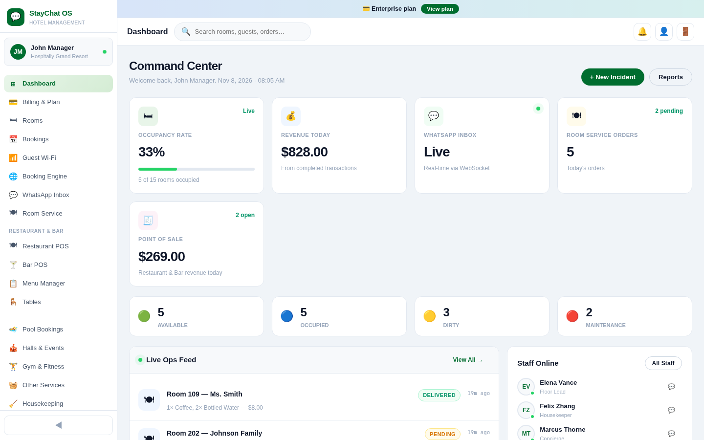
The Dashboard at 07:50: 33% occupancy, $828 taken today, two pending room-service orders, and the room-status strip showing five dirty rooms — the first job of the morning.
Step by step: the shift-start check
Read occupancy. If it is below 40% with arrivals due, check Bookings → Pending and the Booking Engine queue.
Read Room Service. A red “2 pending” badge older than 15 minutes is a guest waiting for food. Go to Room Service and accept or decline.
Scan the room strip. Dirty rooms must become available before check-in time.
Open Live Ops Feed. Confirm nothing has been sitting in “pending” since the previous shift.
Check Staff Online. If housekeeping is not on duty, call the supervisor before assigning rooms.
Use a quick command if the day needs it — print a QR poster for the lobby, send a stay-over promo, or block a nuisance number.
Quick commands, in detail
Command
What it really does
When to use it
Print QR
Generates the hotel’s booking QR and URL (/book.html?hotel=…) and opens a print-ready poster. QR generation stays on your server.
Pick a completed payment, enter the amount and a written reason. The transaction flips to refunded and a reversing journal entry posts. Optionally re-opens a booking checked out over that payment.
Preview the audience (all recent, in-house, arrivals next 14 days, past 90 days), write a WhatsApp message with {name}, send. Blocked numbers are always excluded.
Weekend offer, festive menu, quiet-season push.
Block Number
Adds a phone to the hotel blocklist with an optional reason. Online room, hall and pool submissions from that number are refused automatically.
Worked example — 07:00 handover at Hospitally Grand Resort
John (manager) opens the Dashboard. Occupancy 33% (5 of 15), revenue today $828, room service 5 orders with 2 pending, POS $204 with 2 open tickets. The strip shows 5 available, 5 occupied, 3 dirty, 2 maintenance.
He opens Room Service, accepts the two pending breakfast orders (Room 106 and Room 202) so the kitchen sees them.
He notes Rooms 103 and 107 are dirty — housekeeping must clear them before the 14:00 arrival of Grace Okafor (Room 108 is already clean).
The maintenance card shows 2 rooms out of order; he opens Maintenance and confirms Room 104 (AC) has an assignee.
He prints a fresh booking QR for the reception desk because the old poster still shows last month’s offer.
Total time: four minutes. Nothing was typed twice, and every action is already visible to the next shift.
Trainer tip. Ask new staff to “read the hotel out loud” from this screen for one week — occupancy, money, pending work, dirty rooms. It builds the habit of noticing before acting.
Watch out. “Revenue Today” only counts completed transactions. A pending room charge is real money owed, but it appears under Payments → Pending, not here. Do not promise an owner a revenue figure before checking both.
Key takeaway. The Dashboard is a decision screen, not a report. Use it to pick the next action, then go to the module that owns that action.
The hotel’s subscription cockpit: which plan you are on, what you are using, what renews, and how to change it.
Who: owner/admin only (billing.manage)Sidebar → Billing & Plan
What this screen is for
StayChat OS is licensed per property. Billing & Plan shows the current subscription, the usage against plan limits, any pending activation request (with the payment reference the platform team issued), renewal reminders, and the plan comparison table. It is deliberately invisible to reception and staff.
Screen tour
Current plan card — plan name, status badge (Trial / Active / Grace), rooms used vs. limit, staff logins used vs. limit.
Trial / renewal banner — days left, expiry date, and the payment reference to quote. A renewal button appears when the plan is close to expiry.
Pending activation — shown when a plan request has been submitted and is awaiting platform confirmation; the request can be cancelled here.
Plans — Starter, Pro and Enterprise with monthly/yearly pricing and the feature bullets that actually differ. The current plan is marked CURRENT.
Billing history — plan, cycle, amount, status, payment reference and date for every past period.
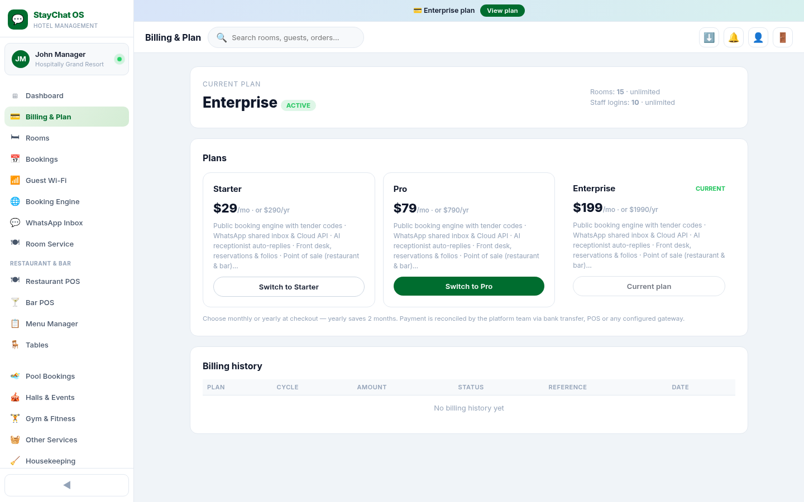
The plan cockpit. This demo hotel is on Enterprise, with 15 rooms and 10 staff logins — both unlimited on this plan. Plans are switched with a request, not a self-service card charge.
Step by step: upgrading a plan
Compare the plan bullets against your real constraint — rooms, staff logins, or a module you need (accounting, pool/halls, AI add-ons).
Click Switch to Pro (or the relevant plan). Choose monthly or yearly; yearly is priced as ten months.
Submit the request. The page now shows Activation pending with a payment reference.
Pay by the method the platform team accepts (bank transfer, POS, or a configured gateway) and quote the reference.
When the platform confirms, the plan badge flips to ACTIVE and the new limits apply immediately.
Worked example — “we need 40 rooms”
The hotel adds a new wing, taking it from 15 to 40 rooms. The Starter plan’s room limit is reached, so new rooms cannot be sold. The admin opens Billing & Plan, the room usage meter reads 15 of the plan’s limit, and requests Pro yearly because the hotel runs year-round. The platform issues reference SUB-4471; finance pays it; the plan activates the same afternoon. The admin then adds the 25 new rooms in Rooms → + Add Room and assigns them to the existing Deluxe category so the weekday/weekend/holiday rates apply without retyping prices.
Trainer tip. Show the owner only two things here: the usage meters and the renewal date. Everything else is for the platform team or the accountant.
Watch out. Cancelling a pending request does not refund a payment already made — it only withdraws the request. Reconcile with the platform team before cancelling.
Key takeaway. The plan controls capacity and premium modules; check the usage meters before a busy season, not after you have run out of rooms.
Related: Users (28) for staff-login limits, Settings (32) for hotel details.
03
Rooms
The physical hotel as a live board: what is free, what is sold, what is dirty, and what is broken.
Rooms is the source of truth for room state. Every check-in, check-out, cleaning assignment and maintenance block changes a room’s status here, and every other module reads that status. Reception should be able to answer “which room can I sell right now?” without leaving this page.
The five statuses
Status
Meaning
What changes it
available
Clean, empty and sellable.
Check-out + cleaning completed; manual status change.
occupied
A guest is in-house.
Check-in from Bookings or the room modal.
dirty
Guest has left; room needs servicing.
Check-out (automatic).
cleaning
Housekeeping is working on it.
Assign Cleaning on a dirty room, or Housekeeping → Assign.
maintenance
Out of order; cannot be sold.
Maintenance button on the room, or a maintenance request.
Screen tour
Summary line — available · occupied · total, so you can brief the manager without counting cards.
Search — room number or type (“suite”, “204”).
Manage Floors — add named floors (Ground Floor, Deluxe Wing) and see how many rooms each holds.
Categories & Pricing — define room categories with weekday, weekend, holiday and festive rates plus a discount and capacity. This is where tiered pricing lives.
Filter pills — All / Available / Occupied / Dirty / Maintenance / Cleaning; the floor pills appear when you have more than one floor.
Room cards — number, type, view and rate. Occupied cards show the guest and checkout date; dirty cards show an Assign Cleaning button; maintenance cards show the issue.
Room modal — edit number, type, view, floor, rate, capacity and status; Check-in, Check-out, Maintenance, Delete and Save Changes.
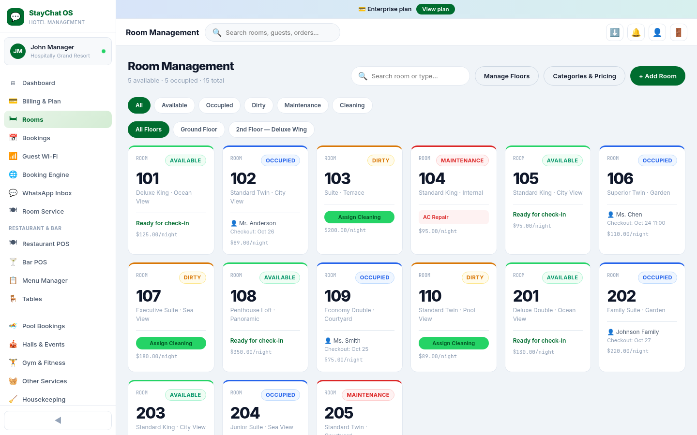
Room Management. Dirty rooms offer a one-click cleaning assignment; the maintenance rooms display the actual fault, so the front desk can tell a guest the truth.
Step by step: setting up the room stock
Open Manage Floors → add each floor number and a human name. Rooms can exist without a floor, but filters and reporting are cleaner with them.
Open Categories & Pricing → Add a Category: name, capacity, weekday rate, weekend rate, holiday rate, festive rate, discount. Leave a rate blank to inherit the one before it.
In the same modal, add Holidays & Festive Dates — a date plus type. Festive dates price at the festive rate; holidays at the holiday rate.
Click + Add Room. Pick a category to auto-fill the rate and capacity, or leave “Custom” and type a rate.
Repeat for every physical room. Use the real room number — guests, housekeeping and receipts all read it.
Step by step: checking a guest in from the room
Click an available room card → Check-in.
Choose an existing guest, or register a new one with name and phone. A room cannot be checked in against a blank or placeholder name.
Confirm. The room becomes occupied and the guest’s name appears on the card.
If the reservation already exists, check in from Bookings instead — that keeps the folio, dates and rate attached.
Check-out and the balance gate
Check-out is deliberately strict: if the folio still has money on it, the system refuses and shows the outstanding room balance plus unpaid incidentals. The desk has three choices: Cancel, Go to Pay (jumps to Payments with the room pre-filled), or — for managers with payments.manage — Override & Check Out, which requires a typed reason and leaves the balance on record.
Worked example — the 11:40 late checkout
Ms. Chen (Room 106) asks to leave at 12:30. Reception opens Rooms → 106 → Check-out. The gate reports $220 outstanding (room balance plus a $15 room-service order). Reception clicks Go to Pay, settles $220 by card in Payments, and the room checks out automatically: status dirty, housekeeping sees it immediately. The receipt prints on the front-desk A4 printer. Elapsed time: 90 seconds.
Trainer tip. Make new staff change a room from dirty → cleaning → available by hand once, so they understand that “clean” is a claim someone makes, not a timer.
Watch out — rate editing. Changing a room’s rate changes future default pricing, not existing reservations. Never “fix” a guest’s bill by editing the room rate; use the reservation’s Edit screen or a payment adjustment so the audit trail stays intact.
Key takeaway. A room card is a promise: available means sellable, occupied means someone is responsible for a guest, dirty means housekeeping owes you a room.
Reservations from first enquiry to check-out: single rooms, group blocks, OTA references, deposits, transfers, and online bookings waiting for a human decision.
Bookings owns the guest’s stay: dates, rooms, rate, party size, contact and ID details, source, deposit and status. It is also the front door for the public booking engine: online submissions land in the Pending tab with a tender code until the desk confirms or rejects them.
Statuses and tabs
Status
Meaning
pending_payment
An online submission the desk has not yet confirmed. Shown in Pending with its tender code.
confirmed
Reserved, room held, guest expected.
checked_in
Guest arrived; rooms occupied.
checked_out
Stay finished; rooms sent to housekeeping.
cancelled
Reservation withdrawn; no room held.
The tab row counts what matters: Pending (n), Upcoming, Confirmed, Checked In, Checked Out, Cancelled, All. Online hall and pool submissions appear at the top of Pending too, with their own code, so nothing waits in two different places.
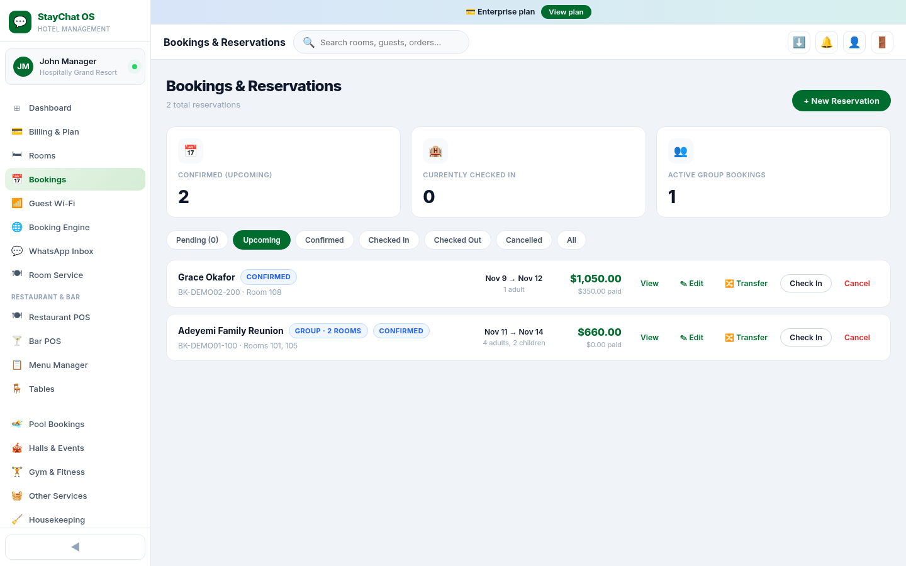
Bookings & Reservations. Two reservations: a single room for Grace Okafor and a two-room group for the Adeyemi family reunion. The group is billed to one account.
Step by step: a new reservation (single room)
Click + New Reservation. If an unfinished form exists from the last hour, the system offers to Continue Draft or Start Fresh.
Enter the phone number first. For a returning guest this auto-fills name, email, address, ID, country/state and next of kin from their last stay, and shows a small stay-history strip.
Complete guest details: surname, first name, email, address, means of identification, ID number, country, state/region, next of kin.
Set Check-In and Check-Out dates, adults and children.
Pick one room from the available-room grid. The tile shows number, type and rate.
Choose the Source: Direct/Walk-in, Phone, WhatsApp, OTA/Booking Site or Corporate. For OTA, add the channel reference and tick Already prepaid by the channel if true.
Optionally take a payment now: choose Cash, Card, POS, Bank Transfer, etc., and enter the amount. The receipt shows total, paid and remaining balance.
Click Create Reservation. The booking is confirmed and the room is held for the dates.
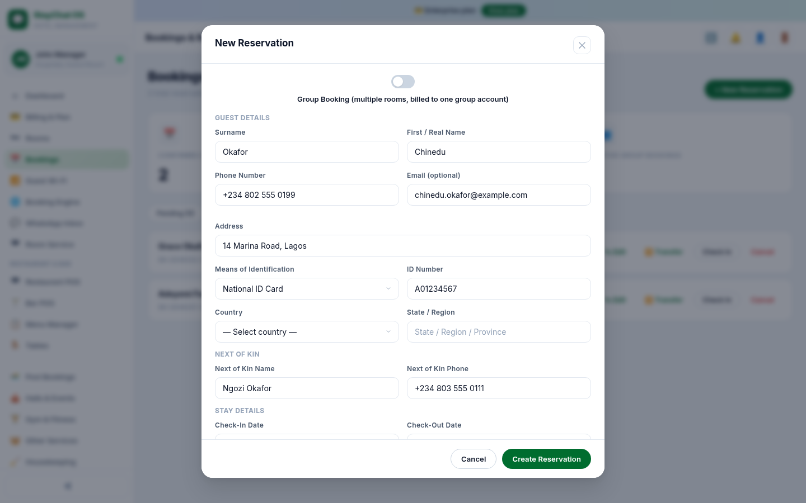
The reservation form mid-entry. Phone-first entry, full ID and next-of-kin capture, one room selected, and the “1 room selected · billed to the individual guest” summary at the bottom.
Group bookings (two or more rooms, one bill)
Turn on Group Booking (multiple rooms, billed to one group account).
Enter a Group / Party Name — this is what reception, housekeeping and the folio will display.
Select two or more rooms. The summary line confirms how many rooms and that they are billed to the group account.
Create the reservation. The list shows a Group · N rooms badge; View → View Group Folio shows room charges plus every incidental posted by any room in the group.
Editing, transferring, cancelling
✎ Edit — correct contact details, dates, party size or notes. Changing dates is re-checked against availability; a clash returns a readable conflict message. The total can only be changed by a manager (pricing.manage), and the guest’s original rate is preserved.
🔀 Transfer — move the guest to another free room for the whole stay. Only rooms free for those dates are offered, and the server re-checks inside the transaction so two desks cannot double-book.
Cancel — only on a confirmed reservation. The room is released; the record stays for reporting.
Check-in and check-out from the reservation
Check In marks every attached room occupied and, if a Wi-Fi controller is configured, provisions the guest’s internet session — the credentials modal appears automatically, with one card per room for groups. Check Out applies the same balance gate as Rooms: settle first, or override with a written reason.
Online bookings: the Pending queue
Open Pending. Each submission shows ONLINE BOOKING — TENDER CODE and the code, e.g. BE-7K2M.
Ask the guest for the code (it is on their confirmation page), or match by name and dates.
Click ✓ Confirm to hold the room, or Reject if you cannot honour it. The guest is told to contact the hotel.
🖨 Slip re-opens the guest’s confirmation page for printing.
Worked example — the Adeyemi family reunion
Rotimi Adeyemi books four adults and two children for three nights, in two rooms, by phone. The desk turns on Group Booking, names it “Adeyemi Family Reunion”, selects Rooms 101 and 105, and takes a $100 deposit by card. The reservation is confirmed at $660 with $100 paid. Two days later the family asks to move one room closer to the other; the desk uses 🔀 Transfer on Room 105 to Room 110, which is free for the full stay. The rate and the group folio follow the reservation — no re-invoicing, no lost deposit.
Trainer tip. Teach the phone-first habit explicitly. It removes about 70% of typing for repeat guests and prevents duplicate profiles with different spellings.
Watch out. Never create a “dummy” guest to hold a room. Check-in requires a real guest account, and fake names poison the guest history, loyalty and police/ID records.
Key takeaway. A reservation is the single source for dates, rate and folio. Edit it there; do not patch the room or the payment to compensate.
Guest Wi-Fi turns a network controller into a front-desk task. Each booking gets a unique identity and password, optionally with a speed tier and data cap and an expiry that follows the stay. The guest can also self-serve at /wifi.html using room number + booking reference.
Screen tour
＋ Provision for Booking — sends you to Bookings; open the reservation and use its 📶 Wi-Fi action.
Active / Revoked / All filters.
Session table — room, guest, controller, speed (down/up and data cap), status, expiry, and the two actions: Credentials and Revoke.
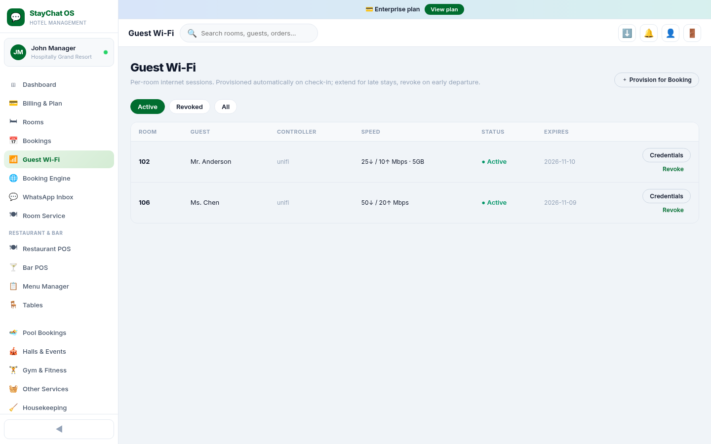
Two active sessions. The controller column tells you which network system received the credentials (UniFi in this demo). Speed and expiry are per session, not per hotel.
Step by step: issue Wi-Fi at check-in
Check the guest in from Bookings. If a controller is configured, the session is created automatically.
The credentials card appears: network name, password, speed, expiry, and a Print button.
Hand the printed card to the guest, or read the password to them.
For a group booking, the modal shows one card per room — print once and hand each room its own.
If the guest checked in before the controller was configured, open the booking and click 📶 Wi-Fi to provision on demand.
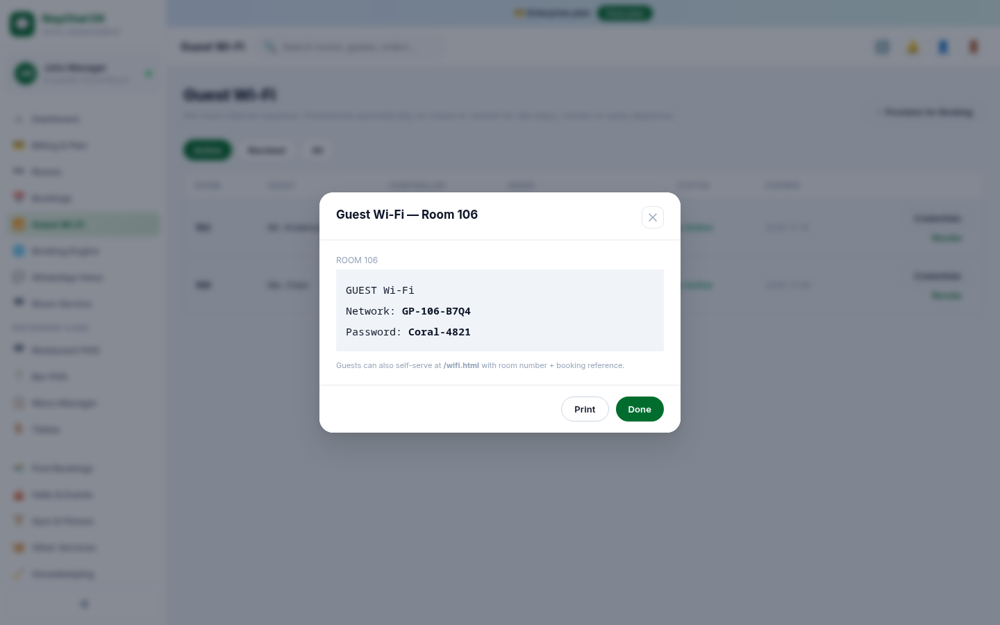
The credential card the desk prints. The same credentials are available to the guest at /wifi.html with their room number and booking reference.
Extend and revoke
Extend (via the session’s detail / API) moves the expiry for a late checkout without issuing new credentials.
Revoke asks for confirmation, then marks the session revoked and pushes the change to the controller. Use it for early departures and abuse.
Revoked sessions remain visible under Revoked for the audit trail; they never come back automatically.
Worked example — the conference group
A 12-room corporate group checks in. Reception checks in the group reservation; twelve credential cards are generated and printed in one pass. The organizer asks for streaming quality in the boardroom suite: reception extends that one session and notes it in the booking. On Friday the group leaves at 09:00 instead of 11:00; reception revokes all twelve sessions before handing the rooms to housekeeping.
Trainer tip. Print the Wi-Fi card together with the room key — one handover, no second trip to reception.
Watch out. Without a controller configured under API Integrations → Internet Management, StayChat still issues credentials but cannot push them to the network gear. The credential card shows a note when that is the case; do not promise “it will just connect”.
Key takeaway. Wi-Fi is part of the stay, not a separate favour: provision at check-in, revoke at check-out, keep the session tied to the booking.
Related: Bookings (04), API Integrations (31).
06
Booking Engine
Your own direct-booking channel: a public page, a QR code, a tender code, and a desk decision.
The Booking Engine replaces the OTA middleman for direct guests. It publishes a branded page at /book.html?hotel=your-subdomain where guests see live availability and prices, submit a request, and receive a tender code. Nothing is sold automatically: the reservation waits in Bookings → Pending until the desk confirms it — which is what stops double-selling and no-show surprises.
Screen tour
Status — Live or Off. Off hides the public page without deleting anything.
Public link — copy it, open it, or encode it in the QR poster.
Guest-facing notice — a short line shown above the form (“Reception is open 24/7”, “Airport transfers available”).
Max submissions per day — a spam guard. When reached, new submissions are refused for the day.
Save Configuration — applies immediately.
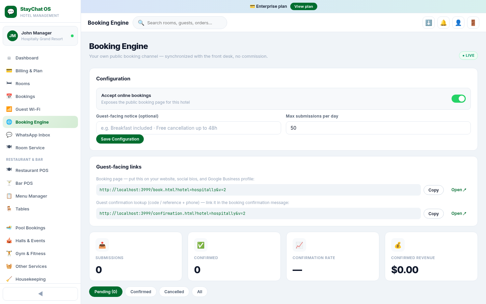
The engine settings: live status, the hotel’s public link, the guest notice, and the daily submission cap. Keep a generous cap for a small hotel; it exists to stop abuse, not real guests.
Step by step: publish the engine
Confirm your rooms are sellable: correct rates, categories and statuses. The engine can only sell rooms that exist and are available.
Open Booking Engine and switch it Live.
Write the guest notice in plain language — what happens after they submit.
Set a sensible daily cap (50 is a good starting point for a 15-room hotel).
Click Save Configuration, then Open ↗ to test the page yourself with a real date.
Print the QR poster from Dashboard → Print QR and place it at reception, in rooms and at the restaurant host desk.
What the guest sees
The public page shows the hotel name, dates, room types and prices, and asks for name, phone and party size. On submit the guest gets a confirmation screen with their tender code and the instruction to show it at reception. That page is also the slip the desk can reprint.
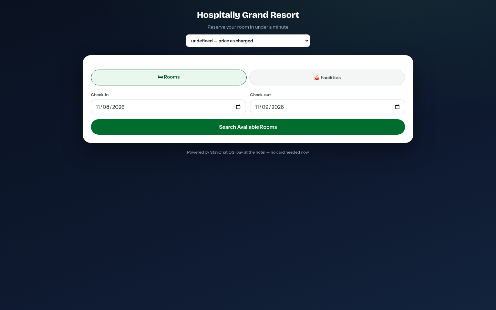
The public booking page for the demo hotel. It is the same page the lobby QR opens, with no login and no app install.
Handling a submission
A submission arrives in Bookings → Pending with status pending_payment and its tender code.
Call or WhatsApp the guest if anything is unclear — the phone number is on the record.
Click ✓ Confirm. The room is held, the guest is notified, and the booking moves to Confirmed.
If you cannot honour it, Reject. The guest is asked to contact the hotel; the record remains for reporting.
At arrival, find the booking, verify the code and ID, then check in.
Worked example — the Friday-night rush
A couple scans the lobby QR at 18:20 and submits a request for Room 101 for two nights. The desk sees Pending (1), opens the record, checks the price ($250) and confirms. The guest shows the code at 18:31; reception checks them in, issues Wi-Fi, and the room flips to occupied. The hotel earned the booking directly, at its own rate, without OTA commission — and without leaving the desk.
Trainer tip. Test the public page from a phone once a week. If a guest cannot complete it on a phone, the channel is effectively closed.
Watch out. The engine holds nothing until the desk confirms. During peak periods, confirm or reject within the hour — a pending request is not a sold room.
Key takeaway. The engine creates demand; the desk converts it. Treat Pending as a queue with an SLA, not a mailbox.
Related: Bookings (04), Analytics (21) for the direct-channel conversion rate, Settings (32) for the hotel’s public notice.
07
WhatsApp Inbox
Every guest conversation in one place, with the AI receptionist drafting and staff taking over when a human is needed.
The Inbox is the hotel’s WhatsApp line. Guests ask about check-out times, order food, request pillows, report a problem, or ask for the pool hours. Messages arrive in real time; the AI receptionist replies when it is enabled and confident, and flags the conversation for a human when it is not.
Screen tour
Conversation list — guest name, room, last message, time, unread count. Online presence is shown for guests using the web chat.
Chat window — the thread, with AI replies labelled AI Receptionist, guest messages on the left and hotel replies on the right.
Composer — type a reply and send as the signed-in staff member. The guest sees one hotel number, not a different agent per shift.
+ New Conversation — start a thread with a guest who is not in the list (name, phone, optional room, first message).
Simulate Guest Message — a demo tool that injects an incoming message and triggers the AI, so trainers can demonstrate the flow without a real phone.
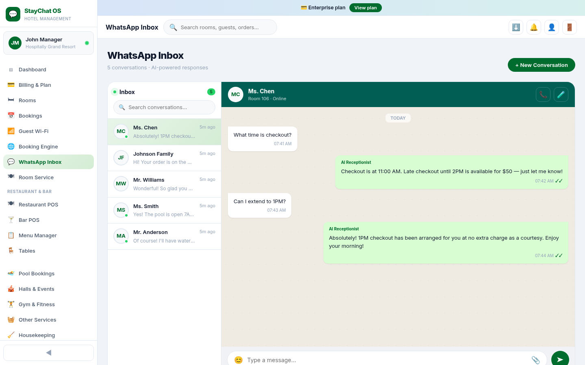
The inbox with five conversations. AI replies and staff replies live in the same thread, so the guest never has to repeat themselves.
Step by step: answer a guest
Open the Inbox. Conversations with unread messages sit at the top with a count.
Read the thread before replying — especially if the AI already promised something (“late checkout at no charge”).
Type the reply. Keep it short, warm and specific: a time, a room number, a price.
If the request creates work, create it in the owning module before you reply: a room-service order, a maintenance request, a housekeeping task, a pool booking.
If the guest asks for something you cannot approve (refund, discount, late checkout beyond policy), say you are checking and escalate — do not improvise.
Worked example — “Can I have a late checkout?”
Ms. Chen messages at 09:10. The AI replies with the standard policy (11:00, late until 14:00 for $50). She asks for 13:00. The AI flags the thread; Priya opens it, checks that Room 106 is not needed for an arrival, and replies “1pm is arranged, no charge — enjoy your morning.” She then edits the booking’s check-out time and notes “late checkout approved by PS” in the reservation. Housekeeping sees the updated departure on their board. One conversation, one record, no phone calls.
Trainer tip. Run a 10-minute drill: trainer sends three messages (pillow, pool hours, complaint), trainee must reply and create the right records. Speed is secondary; accuracy is the pass mark.
Watch out. The AI is a receptionist, not a manager. It must never approve refunds, discounts, rate changes, or anything that commits money. Configure its tone and escalation rules in Settings (Chapter 32) and review the thread when in doubt.
Key takeaway. WhatsApp is the front desk’s second counter. Answer fast, create the record, then reply — in that order.
Related: Room Service (08), Housekeeping (18), AI Setup (29), Settings (32).
08
Room Service
Food and drink to the room, from request to delivery, with the charge posted to the guest’s folio.
Who: admin, reception, kitchen/staff (orders.manage)Sidebar → Room Service
What this screen is for
Room Service is a four-column board — Pending → Preparing → Delivered (plus Cancelled) — that turns a guest request into a kitchen task and a folio charge. It is the module behind “I ordered 20 minutes ago” complaints, because every order has a visible state and a time.
Screen tour
Counters — pending, preparing, delivered and cancelled for today.
Order cards — room and guest, items with quantities, total, note, time, paid/unpaid and status.
Pending actions — Accept (moves to preparing) or Decline (cancels).
Preparing action — Mark Delivered.
+ New Order — build an order for an occupied room from the menu, with a special instruction and a paid flag.
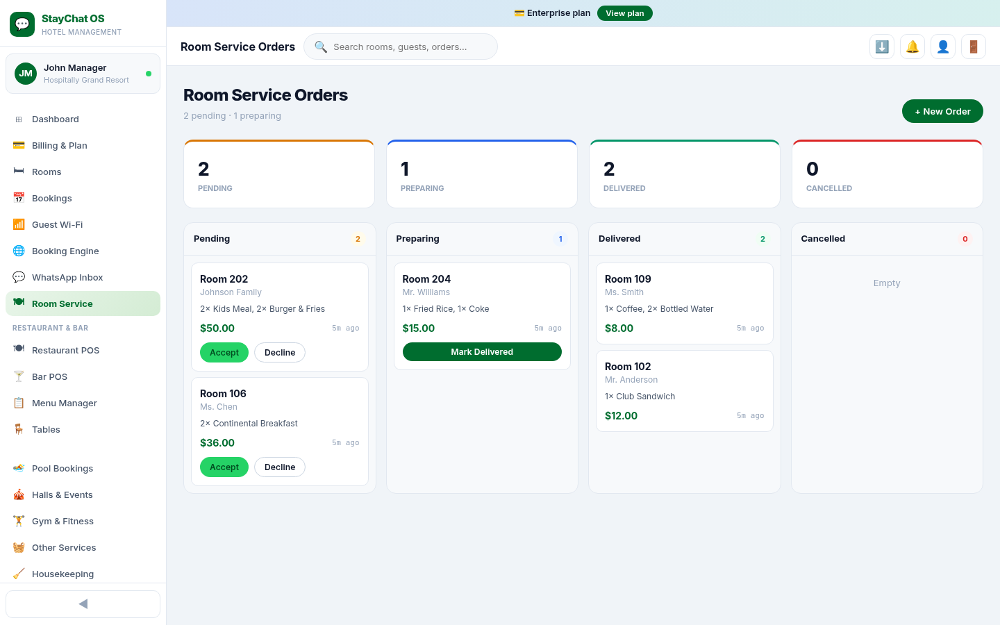
The room-service board. The green “Delivered” column is the proof for the guest complaint conversation; the amber “Pending” column is what the kitchen must accept next.
Step by step: take a room-service order
Click + New Order.
Choose the Room — only occupied rooms are offered, so a charge cannot be posted to an empty room.
Add items from the menu with quantities; the total updates as you go.
Add a Special Instruction (“no spice”, “extra cutlery”, “call on arrival”).
Choose the payment handling: charge to the room (folio) or record as paid at the door.
Click Place Order. It appears in Pending immediately for the kitchen.
Step by step: work the board
Accept the order — the guest’s expectation clock starts now.
Prepare it. If the item is unavailable, decline with an apology and offer an alternative in WhatsApp.
Deliver it, then Mark Delivered. The room’s folio now has a delivered charge.
At departure, the charge appears in the balance gate and is settled with the room bill.
Worked example — breakfast for two rooms
At 07:20, Rooms 106 and 202 order breakfast. Room 106: 2 × Continental Breakfast ($36), no notes, charge to room. Room 202: 2 × Kids Meal + 2 × Burger & Fries ($50), charge to room. The kitchen accepts both, delivers at 07:45, and marks them delivered. At check-out the folios show $36 and $50 respectively; reception settles both in one payment each. If the Johnson family disputes the charge, the board still shows the delivery time and the items.
Trainer tip. The Accept step is the promise. Teach staff never to leave an order in Pending “for the kitchen to see later” — acceptance is the handshake with the guest.
Watch out. Do not create a room-service order for a walk-in or a departed guest. If the room is not occupied, use the Restaurant POS or the Other Services module instead, so the money lands in the right drawer.
Key takeaway. Every order must end in Delivered or Cancelled. An order left in Pending is a complaint waiting to happen.
The paid extras catalogue — laundry, shoe shine, car wash, airport transfer, spa — sold from a price list and charged to the guest.
Who: admin, reception, staff (orders.manage)Sidebar → Other Services
What this screen is for
Hotels sell more than rooms and food. Other Services keeps those extras in one catalogue with fixed prices, so nobody invents a price at the counter. Orders move pending → in progress → completed; completing an order records how it was paid and, for room charges, posts it to the folio.
Screen tour
Service catalogue — name, category and price; Manage Services edits or deletes.
Orders — guest, room, service, quantity, total, status and the actions Complete / Cancel.
+ New Order — pick a service, guest, optional room, quantity; the price is calculated from the catalogue.
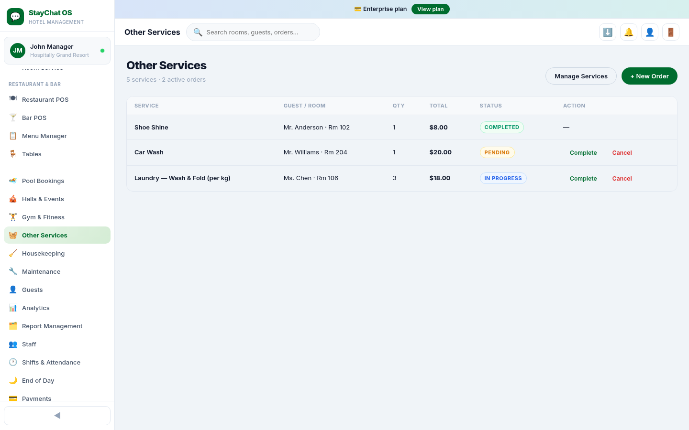
Other Services: a small, priced catalogue (laundry, shoe care, car service, airport pickup) and the orders raised against it.
Step by step: sell a service
Admin first: Manage Services → Add Service. Give it a name, category and price. Keep names specific (“Laundry — Wash & Fold (per kg)”, not “Laundry”).
For an order: + New Order, choose the service, the guest, and the room if the guest is in-house.
Set the quantity (3 kg of laundry, 1 airport pickup).
Create the order. It sits at pending until someone actually does the work.
When delivered, click Complete and choose the payment route: cash, card, or room charge. Room charge becomes an unpaid folio item, settled at departure.
Worked example — laundry and an early flight
Mr. Williams sends 3 kg of laundry. Reception raises “Laundry — Wash & Fold ×3” at $6/kg = $18, room 204, and marks it in progress. Housekeeping returns it the same evening; reception completes the order and posts it to the room. He also books an airport pickup at 05:30 ($35). Both charges appear on his folio; at check-out the balance gate includes them, and the receipt lists each service separately — no arguments about what the $53 was for.
Trainer tip. Have the admin print the service catalogue and pin it at the front desk. Staff should never guess a price; the catalogue is the price list.
Watch out. Do not use Other Services for items that belong to a revenue centre: food and drink go to the Restaurant/Bar till, pool sessions to Pool Bookings, hall rentals to Halls & Events. Mixing them distorts the department reports.
Key takeaway. If it has a price and is not a room, a meal or a facility, it belongs here — with a fixed catalogue price and a completion record.
Related: Menu Manager (13), Payments (23), End of Day (25).
10
Point of Sale — access & terminals
Two tills, two identities, one rule: an operator can only ever sell from their own outlet.
Who: admin, staff, cashier, barman, waiter, server (pos.use)Sidebar → Restaurant POS / Bar POS
What this screen is for
StayChat OS runs the restaurant and the bar as separate revenue centres with separate menus, separate tables, separate receipts and separate day-end totals. They share one POS engine, but the sidebar exposes them as Restaurant POS and Bar POS, each with its own look — warm and light for the restaurant, dark and amber for the bar. This chapter explains who gets which till and how the terminal is opened; the two chapters that follow are the operating manuals for each.
The outlet lock
Signed-in role
Can open
Cannot open
Cashier, Server
Restaurant POS only
Bar POS
Barman, Waiter
Bar POS only
Restaurant POS
Hotel admin, staff, custom roles
Both terminals
—
The lock is enforced twice: the sidebar hides the other terminal, and the server refuses tickets from the wrong outlet. Trying to reach it by typing a URL simply lands the operator on their own till. This is what makes the bar’s stock and cash accountable to the barman, not “whoever was near the tablet”.
Opening a terminal
Click Restaurant POS or Bar POS in the sidebar. A locked role goes straight in.
Managers open either terminal directly. The generic terminal picker (two cards previewing each outlet’s open tickets and revenue) still exists at the old POS link, e.g. /app?page=pos.
Pick the terminal. The operator name defaults to the signed-in user.
Use Switch Terminal to move between outlets (managers only). The switch ends nothing — open tickets stay with their outlet and are visible again when you return.
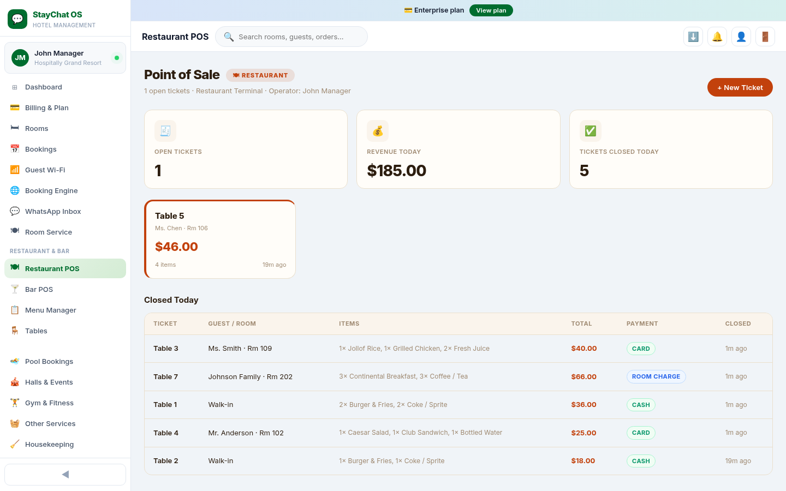
The Restaurant terminal: open tickets on the left, revenue and closed tickets below. The board is live — a ticket opened on another device appears without refreshing.
Worked example — why the lock matters at 21:00
The restaurant closes at 22:00 and the bar is busy. A server walks to the bar tablet to help. She is signed in as server, so the bar board is not on her sidebar; if she opens the bar URL, she lands back on the restaurant. The barman stays accountable for every bar tab and every cash drop. If the hotel genuinely needs cross-cover, the admin creates a custom role with both outlets for that shift — a deliberate, auditable decision, not an accident.
Trainer tip. Open the picker once and let trainees see both cards. It makes the separation obvious: two outlets, two menus, two day-end closes.
Watch out. Never hand a manager’s login to a till operator “for five minutes”. Every void, discount and room charge would be recorded against the manager, destroying the audit trail.
Key takeaway. The till follows the person, not the tablet. Sign in as yourself; the outlet lock protects the stock, the cash and the staff.
Next: the Restaurant POS in detail (11), then the Bar POS (12), Menu Manager (13) and Tables (14).
11
Restaurant POS
The dining room till: seat a table, open a ticket, add dishes, settle it — cash, card or room.
Who: cashier, server, admin/staffSidebar → Restaurant POSReceipts default to 80 mm
What this screen is for
The Restaurant POS is where food and drink sold in the dining room become money. It keeps open tickets visible by table, posts room charges to in-house folios, takes cash with change calculation, and closes the day against the restaurant’s own totals.
Screen tour
Header — open ticket count, terminal and operator name, and + New Ticket.
Three counters — Open Tickets, Revenue Today (closed tickets only) and Tickets Closed Today.
Open board — one card per open ticket: table label, guest/room, total, item count and age.
Closed Today — table of closed tickets with payment method and time; the evidence for the cash-up.
Ticket modal — menu categories, search, item tiles, and the receipt panel with quantity steppers and totals.
Checkout modal — payment methods, cash tendered/change, room or account selection, discount, total due.
Step by step: open a table and take the order
Click + New Ticket. The table chips show every active restaurant table; a table with an open ticket is locked (🔒) and cannot be seated twice.
Pick the table chip, or type a label (“Table 9”, “Terrace 2”) if the table is not in the plan.
Enter Party Size if it matters (the system warns if the party exceeds the table’s capacity).
Optionally add the guest name and link the ticket to an occupied room.
Click Open Ticket. The ticket modal opens immediately.
Tap menu tiles to add items. Use the category pills or search; the receipt panel shows quantity, unit price and line total.
Adjust quantities with − / +; a zero quantity removes the line.
Close the ticket with Close to keep it open on the board, or go straight to Checkout →.
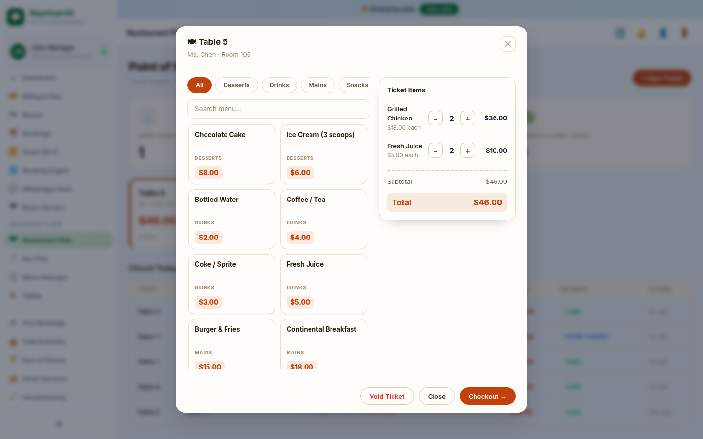
Table 5’s ticket: two Grilled Chicken and two Fresh Juices, $46. The receipt panel is the source of truth — it is exactly what the guest will be charged.
Step by step: checkout
From the ticket, click Checkout →. Every item must be in the ticket first.
Choose the payment method:
Cash — enter the amount tendered; the system shows change due, or a red shortfall if it is not enough.
Card — paid in full now (use the physical terminal; record it here).
Room Charge — pick the occupied room. The modal previews any existing balance before adding this charge.
Customer Bill — bill a named guest or company account.
Group Account — charge a group reservation; the amount joins the group folio.
Optionally apply a Discount %. The totals recalculate live (discount, service charge and tax follow the hotel’s settings).
Confirm. The ticket closes, the receipt opens with the 80 mm paper default, and the board updates.
Print the receipt or close the popup. The payment is now in Payments and in the restaurant’s day total.
Voiding a ticket
Void Ticket discards the items and posts no charge. Use it only for a ticket opened in error or a guest who left before ordering. If food was served, do not void — discount or comp it with a manager’s approval so the cost is visible in reporting.
Worked example — dinner for four, paid two ways
Table 3, four guests, orders 2 × Jollof Rice ($24), 2 × Grilled Chicken ($36), 4 × Fresh Juice ($20) = $80. Two guests are staying in Room 109 and the other two are walk-ins. The server checks out $40 to Room Charge (Ms. Smith’s folio) and $40 by Card for the walk-ins. Two closed tickets, one table, no argument about who paid what. At 23:00 the restaurant close shows both amounts under their methods.
Trainer tip. Practise the cash screen until change is automatic. The most common till error is not the menu — it is typing the tendered amount into the wrong field.
Watch out. Room Charge only offers occupied rooms. If the guest checked out this morning, the room will not appear — use Card/Cash or Customer Bill instead. And never charge a room you have not verified by guest name.
Key takeaway. One ticket = one table = one clear payment story. Close every ticket before you close the day.
Related: Tables (14), Menu Manager (13), Payments (23), End of Day (25), Printers (30).
12
Bar POS
The bar tab: dark terminal, seat-level tabs, drinks by the glass, and a 58 mm receipt for the counter.
Who: barman, waiter, admin/staffSidebar → Bar POSReceipts default to 58 mm
What this screen is for
The Bar POS is the same engine as the restaurant with a different identity: its own menu (cocktails, beer, spirits, bar snacks), its own tables and seats, its own cash-up and its own dark interface so staff never confuse the two tills. It is built for tabs that stay open — a guest orders a round, then another, then settles at the end.
What is different from the restaurant
Area
Restaurant
Bar
Theme
Warm cream and terracotta
Navy and amber
Labels
Table, ticket
Tab, Bar Seat / Lounge
Menu
Mains, salads, desserts, drinks
Cocktails, beer, wine, spirits, bar snacks
Receipt paper
80 mm default
58 mm default
Typical flow
Order → eat → pay
Open tab → rounds → settle at the end
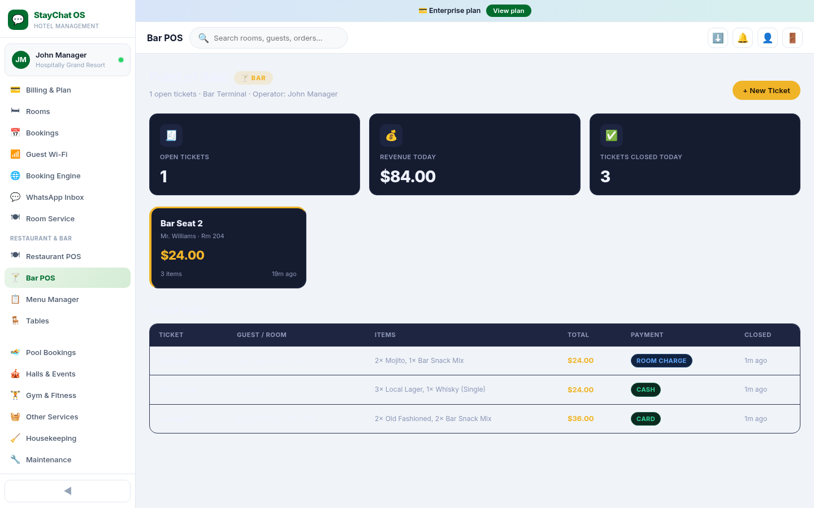
The Bar terminal in its navy/amber theme. “Bar Seat 2” is an open tab for Mr. Williams in Room 204 — the tab can be settled by cash, card or room charge at any point.
Step by step: open a tab and add rounds
Click + New Ticket. The bar table chips show seats and lounge tables; an occupied seat is locked.
Pick the seat/table, or type a tab name (“Bar Seat 5”, “Pool Bar 1”).
Add the guest name and, if they are staying in-house, link the room — this makes the final Room Charge one click.
Open the tab and add the first round. Close the ticket to keep the tab running.
For the next round, find the tab on the board (it shows age and total) and add the items. The original items stay.
When the guest settles, open the tab → Checkout →, choose Cash (with change), Card, Room Charge, Customer Bill or Group Account.
Print the 58 mm receipt. If the tab is transferred to a room, the folio shows one line for the whole evening, not ten small ones.
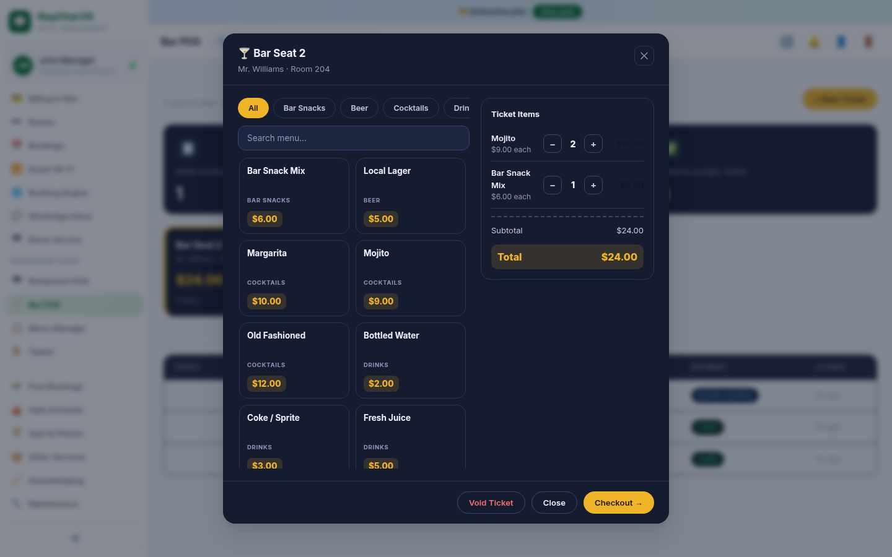
The bar tab builder: Mojito ×2 and Bar Snack Mix ×1, $24. The 58 mm receipt mirrors exactly this panel.
Stock, age and pricing discipline
Stock is set per product in Menu Manager (optional). When it reaches zero, the item can be made unavailable so staff do not sell what is not there.
Age policy is a house rule, not a system field: check ID before serving alcohol, and record the guest’s name on the tab so the sale is traceable.
Prices come from the menu, never from memory. If a price is wrong, the manager fixes the menu — the till is not the place to improvise.
Voids are for opening errors only. A served drink is comped or discounted with approval, so the cost appears in the bar’s reports.
Worked example — the football night
Bar Seat 2 opens at 19:05 with 2 mojitos and a snack mix ($24). Two more rounds follow ($18 and $27); the tab is now $69. Mr. Williams signs it to Room 204 at 23:10. The barman checks out by Room Charge, the folio records “Bar — Bar Seat 2”, and the 58 mm receipt is printed for the guest to sign. At close, the bar’s EOD shows $69 charged to rooms and $0 cash for that tab — matching the drawer exactly.
Trainer tip. Use the tab age on the card as a service prompt: a tab open for over an hour with one drink is either a slow guest or a forgotten round. Check both.
Watch out. Do not leave a tab open past the bar’s closing time. Settle it, or transfer it to the room with the guest’s consent; an open tab blocks a clean EOD close.
Key takeaway. The bar’s unit of work is the tab, not the round. Keep it open, keep it named, settle it once.
Related: Menu Manager (13), Tables (14), End of Day (25), Printers (30).
13
Menu Manager
The price list behind both tills: products, outlets, cost, selling price, availability and stock.
Who: admin (menu.manage)Sidebar → Menu ManagerShared by restaurant, bar and room service
What this screen is for
Menu Manager is the single source of truth for everything sellable in F&B. The Restaurant POS, Bar POS and Room Service all read from it. Change a price here once and every till and every future receipt uses the new price. It also holds the information the accountant needs (cost price), the kitchen needs (availability, stock) and marketing needs (description, image, loyalty points).
Screen tour
Search and outlet filter — All / 🍽 Restaurant / 🍸 Bar.
Product cards/rows — name, category, outlet, selling price, stock and availability; Edit, Delete and an availability toggle.
+ Add Product — the full product form (below).
Categories — the pills the tills show. They can be managed, renamed and ordered; imported menus create them automatically.
Upload image / image URL — a photo makes the tile easier to tap at speed.
Export / Import — move the menu between properties or hand it to a consultant as a spreadsheet/JSON file.
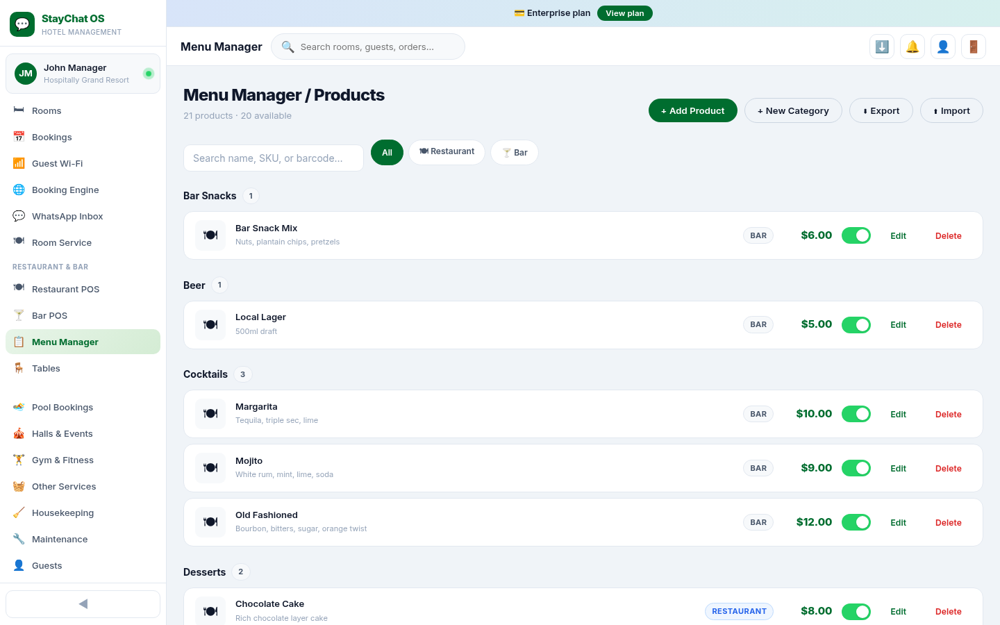
The menu with restaurant and bar items in one list. Outlet matters: a cocktail set to “Restaurant” would appear on the wrong till and confuse the service team.
The product form, field by field
Field
Why it matters
Product Name
Exactly what the guest and the receipt will read. Keep it short and unambiguous.
Description
Allergens, preparation, portion. Shown to staff; useful in WhatsApp answers.
Category
Drives the till’s category pills. Too many categories slows service; 6–10 is usually right.
Outlet
Restaurant, Bar, or both. This is the guardrail against selling the wrong item on the wrong till.
Cost Price
Your cost. Used for margin reporting and menu engineering.
Selling Price
What the guest pays. Tax and service are applied at checkout, not baked into this number.
Discount %
A standing product discount (happy hour, staff meal). Prefer a timed promotion over a permanent discount.
Stock Qty
Optional counter. Set it for finite items (today’s special, a rare spirit) and mark unavailable at zero.
SKU / Barcode
For stock-taking and scanner-based workflows; not required for service.
Loyalty Points
Points earned per unit, for hotels running the guest loyalty programme.
Available for Sale
The kitchen’s switch. Off = invisible/disabled at the till, no deletion needed.
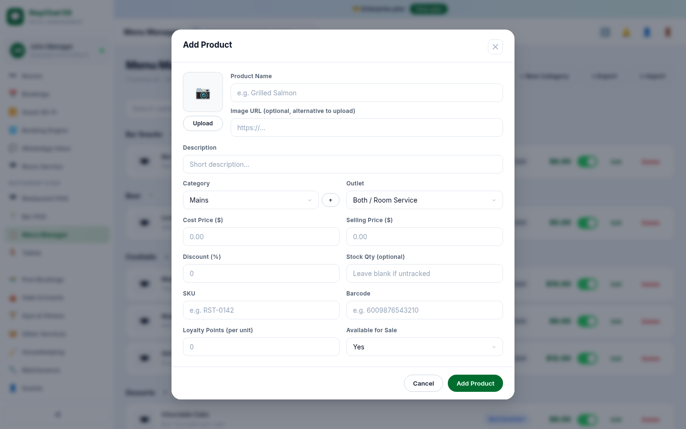
Adding a product. Outlet and availability are the two fields that cause the most support calls when set wrong — check them before saving.
Step by step: launch a new dish or drink
Click + Add Product.
Write the name as it will appear on the receipt (“Grilled Chicken”, not “Chicken grilled special 2pc”).
Pick the category and the outlet. If both outlets sell it (e.g. bottled water), choose “both”.
Enter cost and selling price. If you do not know the cost yet, enter an estimate and correct it within the week — a blank cost hides your margin.
Add stock only if the item is finite. Leave it blank for made-to-order dishes.
Upload a photo if the staff will use the grid at speed.
Set loyalty points if the programme is active.
Save, then open the matching till and confirm the item appears in the right category.
Retiring an item without breaking history
Do not delete a product that has sales history. Turn Available for Sale off. It disappears from the till immediately, but past tickets, receipts and reports still show what was sold. Delete only products created in error and never sold.
Worked example — the $18 chicken problem
The chef reports chicken cost rose from $7 to $9.50 per portion. The manager opens Menu Manager, filters Restaurant, edits Grilled Chicken: cost $9.50, selling $18 → margin 47%. They raise the price to $21 and add a “Chef’s chicken” description. The change is live on both the restaurant till and room service in one save. Reports from last month still show the old cost and price, so the margin trend stays honest.
Trainer tip. Sit with the chef once a month and review the ten best-selling and ten worst-selling items by margin. Menu Manager is a profit tool, not a price list.
Watch out. Setting a product to the wrong outlet is the classic launch-day failure: the bar cannot find the new cocktail, or the restaurant sells a drink it does not stock. Check both tills after every menu change.
Key takeaway. One menu, one price, correct outlet. Everything else — tills, room service, receipts, reports — follows automatically.
Related: Restaurant POS (11), Bar POS (12), Room Service (08).
14
Tables & Seating
The floor plan that prevents double-seating: table names, seats, sitting style and location.
Tables is the seating inventory behind the POS. Each table has a name, a sitting style, a chair count, a maximum number of persons and a location (restaurant or bar). When a ticket is opened against a table, that table is locked for the duration — the single most effective way to stop two waiters seating the same table.
⚡ Quick Add — generate a numbered batch (“T1” to “T12”) in one action; ideal for a new terrace or a bar with 20 stools.
Occupancy is shown inside the POS (locked chip), not stored on this page.
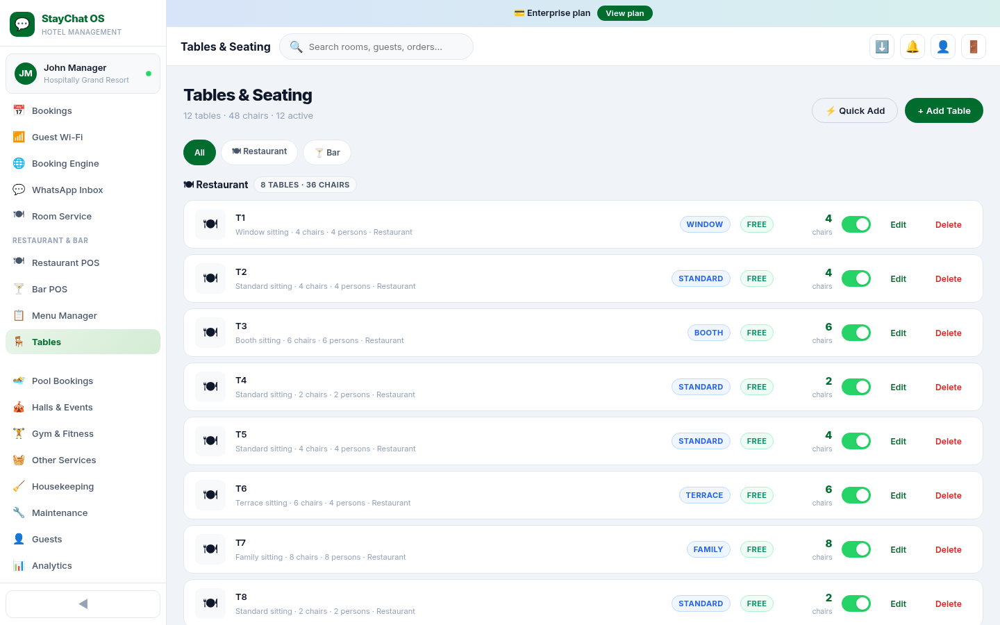
Eight restaurant tables and four bar seats. The “sitting” field is a service hint (Booth, Window, Bar Stool), while “persons” is the hard capacity the POS checks.
Step by step: set up the dining room
Click ⚡ Quick Add; enter prefix T, how many tables (e.g. 12) and the start number (1).
Set the default chairs/persons for the batch, and the location.
Edit individual tables that differ: “T7 Family” with 8 persons, “T1 Window” with 2.
For the bar, repeat with prefix B, 2 chairs per seat, location bar.
Deactivate a table instead of deleting it when furniture is temporarily removed.
Open the POS and confirm the chips show the right names and capacities.
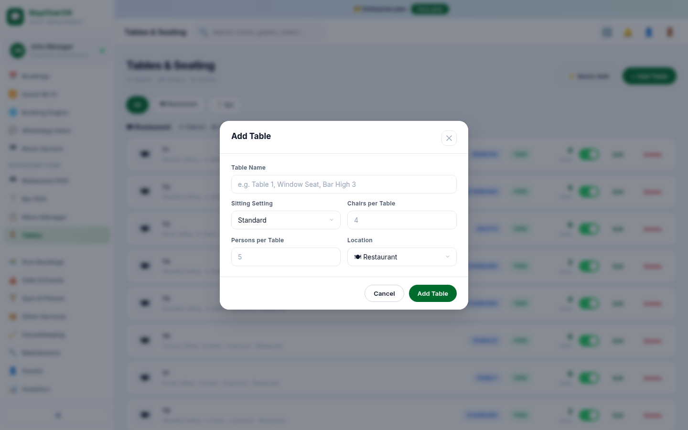
Adding a table. Name, sitting, chairs, persons, location and active flag — six fields that decide what the host and the till see.
Worked example — the new terrace
The hotel opens a 10-table terrace. The manager uses Quick Add with prefix “P” (patio), 10 tables, 4 chairs each, location restaurant. Two tables are edited to 6 persons for families. On opening night the host seats guests by name and the waiters open tickets against P1–P10; a table cannot be opened twice, so no guest is ever shown to an occupied table. At close, the terrace’s tickets are part of the restaurant’s day total, not a separate outlet.
Trainer tip. Walk the floor with the list in hand and name every table aloud. If staff cannot match a table name to a physical table, the names are wrong.
Watch out. Renaming a table does not rewrite past tickets. That is intentional — receipts must show what was sold under the name used at the time.
Key takeaway. Tables are capacity, not decoration. Good names and honest person limits make seating fast and complaints rare.
Related: Restaurant POS (11), Bar POS (12), Menu Manager (13).
15
Pool Bookings
Sell swim sessions and cabanas by time slot, without ever overselling the water.
Who: admin/reception (pool.use); pricing admin (pool.manage)Sidebar → Pool Bookings
What this screen is for
The pool is a capacity business. Pool Bookings tracks each pool area (main pool, kids pool, VIP cabana) with a capacity and a price, and sells dated time slots. Availability excludes slots already sold, so the receptionist never has to count sun loungers by hand.
Screen tour
Date selector and Today — the day you are selling.
Pool cards — name, category, capacity and price; Manage Pools adds or edits the inventory.
Booking list — guest, phone, room, date, time window, party size, area, price and paid flag.
Status actions — Check In, Complete, Cancel, Edit.
+ New Booking — guest, phone, optional room, date, pool, start/end time, party size, price and paid.
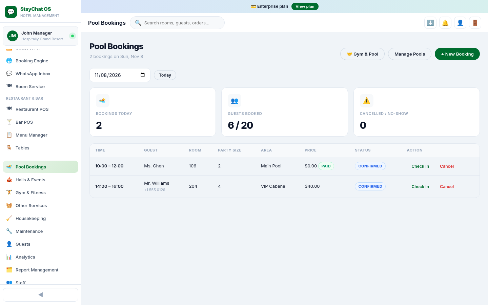
Pool bookings for the day: an in-house guest on the Main Pool and a paid VIP Cabana session. The VIP booking is unpaid — it will follow the guest to the folio or be collected at the desk.
Step by step: set up the pool inventory (admin)
Click Manage Pools → Add Pool.
Name it as guests know it (“Main Pool”, “Kids Pool”, “VIP Cabana”).
Choose a category, set the capacity (guests per slot) and the price per booking (0 for free access).
Add a description the desk can read to a caller.
Save. Repeat for each sellable area.
Step by step: sell a slot (reception)
Click + New Booking and set the date.
Pick the pool. The list of start/end times reflects what is still available.
Enter the guest name, phone, optional room and party size.
Confirm the price (pre-filled from the pool) and whether it is Paid now.
Create the booking. It is confirmed and the capacity is held.
On arrival, Check In; after the session, Complete. A no-show is cancelled so the slot can be resold.
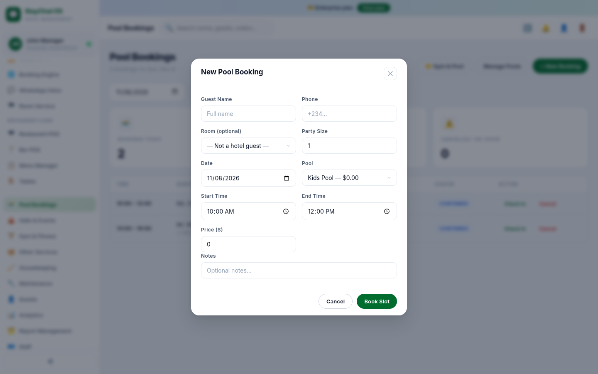
The pool booking form with the pool, date, time window and party size. The price is a property of the pool, so the desk does not negotiate it at the counter.
Worked example — the cabana upsell
Mr. Williams asks for a cabana on Saturday afternoon. The VIP Cabana is $40 for a two-hour window, capacity 6, and the 14:00–16:00 slot is free. Reception books it for 4 guests, records it unpaid, and notes “birthday — prosecco on arrival”. The $40 appears on his folio at check-out; the pool’s end-of-day close counts it as a completed session. If he cancels, reception cancels the booking and the slot is immediately sellable again.
Trainer tip. Ask the pool attendant to confirm the booking name at the gate, not just the room number — it catches family members using a room guest’s entitlement.
Watch out. Do not create two bookings for the same pool and window beyond capacity. The system blocks it; if you need an exception (a private event buy-out), book the whole pool through Halls & Events instead.
Key takeaway. The pool sells time and capacity. Every slot must end as completed or cancelled, or the day’s capacity report lies.
Related: Guests (20), Payments (23), End of Day (25).
16
Halls & Events
Weddings, conferences and boardrooms: dated, priced, deposit-tracked and impossible to double-book.
Halls & Events manages the property’s function space and the bookings against it. Unlike a room night, an event has a date, a start and end time, a setup style, a guest count, catering, a total and a deposit. The module refuses overlapping bookings for the same hall and time, and tracks tentative versus confirmed business so the sales team knows what is real.
The Grand Ballroom wedding and a tentative boardroom offsite. The deposit column is what the finance team chases; the status column is what the sales team trusts.
Step by step: set up a hall
Manage Halls → Add Hall.
Enter the name, category (Ballroom, Boardroom, Outdoor), capacity, hourly and full-day rates.
List the amenities the sales team promises (stage, AV, dance floor, bridal suite).
Save. The hall is now bookable.
Step by step: book an event
+ New Booking.
Choose the hall, then the event type and name (“Bello-Fashola Wedding Reception”).
Capture the organizer’s name and phone — this is who you call when the layout changes.
Set the event date, start and end time. The form warns if the hall is already taken for that window.
Enter guest count, setup style and whether catering is required.
Enter the total amount and the deposit received. A deposit without a matching payment is just a number — take it in Payments or record it here as paid and reconcile.
Save as tentative. Confirm only when the deposit and the signed terms are in place.
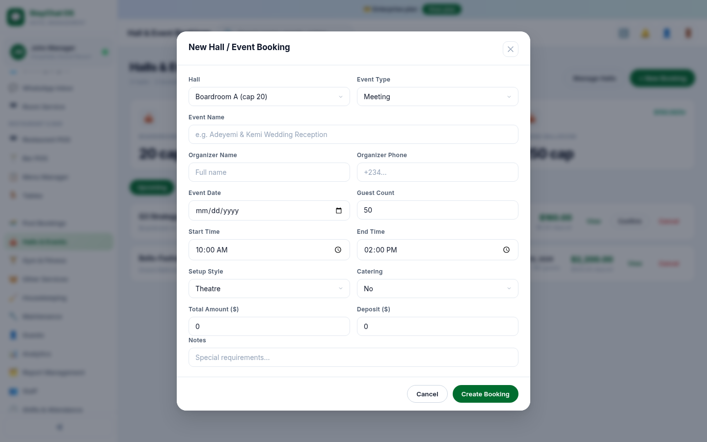
The event form. Guest count and setup style drive staffing and layout; total and deposit drive the cash flow.
Worked example — two enquiries, one Saturday
A wedding wants the Grand Ballroom on 18 November, 16:00–23:00, 180 guests, banquet setup, $2,200 with a $500 deposit. The same morning a corporate client asks for the same hall on the same date. The second booking is refused by the overlap check before any deposit is taken. The wedding is marked confirmed after the deposit; the corporate client is offered the Garden Pavilion instead. On the day, the event is marked Complete, and the balance is settled through Payments against the organizer’s record.
Trainer tip. Treat tentative as “not sold”. Chase deposits weekly; an unconfirmed hall on a Saturday is lost revenue.
Watch out. The system prevents double-booking a hall, but it cannot prevent double-selling staff, AV or parking. Keep those constraints in the event notes and confirm them with the operations manager.
Key takeaway. A hall booking is a contract: date, time, setup, total, deposit, status. If one is missing, the event is not ready to run.
Related: Payments (23), Accounting (24), End of Day (25), Reports (22).
17
Gym & Fitness
Day passes and memberships by gym, with capacity checked before the guest signs up.
The gym is sold two ways: a daily pass for in-house guests and walk-ins, and a membership (monthly, quarterly or yearly) for locals. Gym & Fitness holds both the facilities and the registrations, with pricing per gym and a live capacity check so you never sell a membership into a full facility.
Screen tour
Gym cards — name, type, capacity, facilities and the four prices (daily, monthly, quarterly, yearly).
Registrations — member, contact, room, type, period, amount, paid, status; filters Upcoming / Active / Completed / Cancelled / All.
+ New Registration — member details, gym, registration type, start date, amount and paid flag.
Actions — View, Edit, Complete, Cancel.
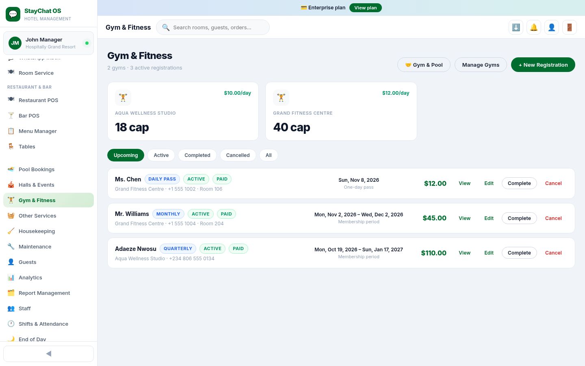
Two gyms — a premium fitness centre and a yoga studio — with day passes and memberships in one registrations list. The period column shows exactly what the member paid for.
Step by step: set up a gym
Manage Gyms → Add Gym.
Name it, choose a type (Standard, Premium, Yoga & Wellness, CrossFit…).
Tick the facilities you actually provide — they appear on the member’s record and at the desk.
Set capacity and the four prices. Leave a price at 0 if you do not sell that duration.
Save.
Step by step: register a member or sell a day pass
+ New Registration.
Pick the gym. The form shows the capacity and the price for each duration.
Enter the member’s name, phone, optional email and room (for in-house guests).
Choose Daily, Monthly, Quarterly or Yearly. The end date is calculated; a daily pass starts and ends the same day.
Confirm the amount and whether it is paid. For room charges, settle through the folio.
Save. The registration is active until its end date, then it moves to completed.
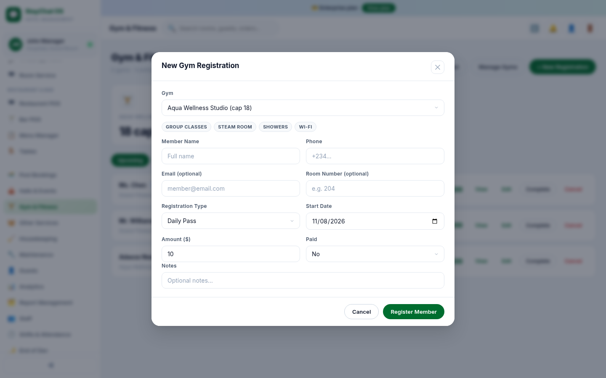
Registering a member. The duration decides the end date and the price; the room field links an in-house guest to the folio.
Worked example — the local member
A neighbour wants to join for three months. Reception opens the Grand Fitness Centre, chooses Quarterly ($120), records the member’s phone and email, takes card payment, and marks it paid. The registration runs for 90 days. When the member arrives, the desk can find the record by name or phone and confirm it is active. At renewal, a new registration is created — the old one is never edited, so the revenue history stays clean.
Trainer tip. Show the capacity number before selling a membership. “We have 40 places, 38 taken” is a much easier conversation than a refund later.
Watch out. Changing a member’s dates or duration is not an edit — cancel the old registration and create a new one so pricing and capacity are re-verified. The system enforces this on purpose.
Key takeaway. A day pass and a membership are the same object with different durations. Record the type honestly; it drives the revenue split.
Turn dirty rooms into sellable rooms, with a named cleaner and a visible clock.
Who: admin, reception, HK staff (housekeeping.manage)Sidebar → Housekeeping
What this screen is for
Housekeeping is the operational twin of the Rooms board. It shows only the work: rooms that need cleaning, rooms being cleaned, and rooms already clean. Every assignment names a staff member, and every completion changes the room to available — which is the moment reception can sell it.
Screen tour
Three counters — Needs Cleaning, In Progress, Cleaned Today.
Needs Cleaning — dirty rooms with type, view and floor, and an Assign button.
Being Cleaned — rooms in progress with a Clean button when finished.
Staff Performance Today — tasks completed and average time per housekeeper, from the Staff records.
Assign Cleaning modal — pick an active housekeeping staff member; the assignment goes out via WhatsApp.
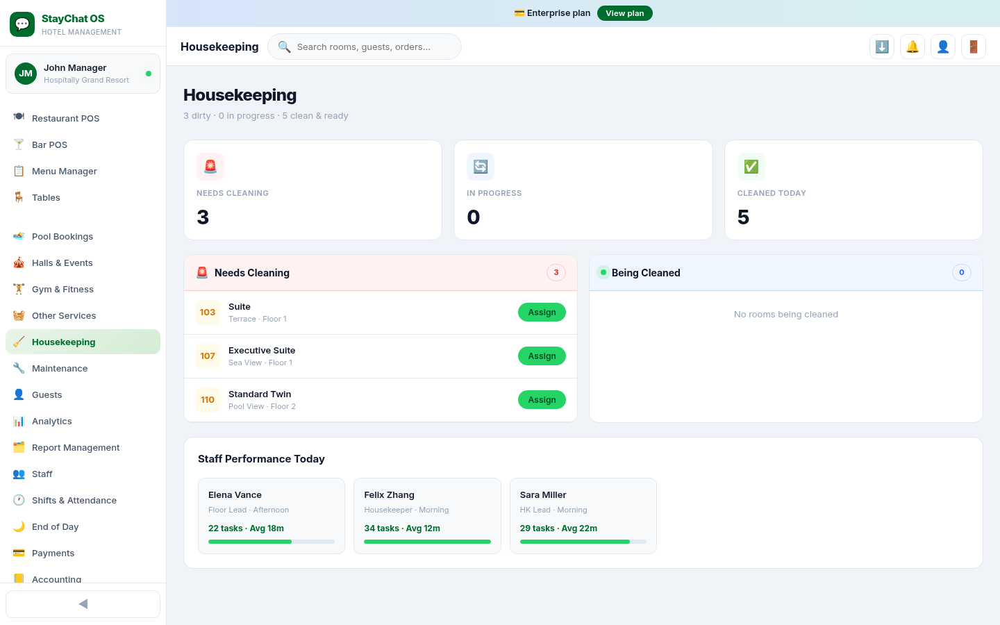
The housekeeping board. The left column is the queue; the right column is work in progress. Staff performance is visible, so supervision conversations use numbers, not impressions.
Step by step: the morning room round
Open Housekeeping. The dirty count is the first number of the day.
For each dirty room, click Assign and choose a housekeeper. Prefer the same floor per person to reduce walking.
The room moves to Being Cleaned and the staff member is notified via WhatsApp.
When the room is ready, the cleaner (or the supervisor) clicks Clean. The room becomes available on the Rooms board instantly.
If the room needs a repair, do not mark it clean — raise a maintenance request (Chapter 19) and keep it out of sale.
Before check-in time, reconcile: any room still dirty that is sold tonight is a risk. Escalate to the supervisor.
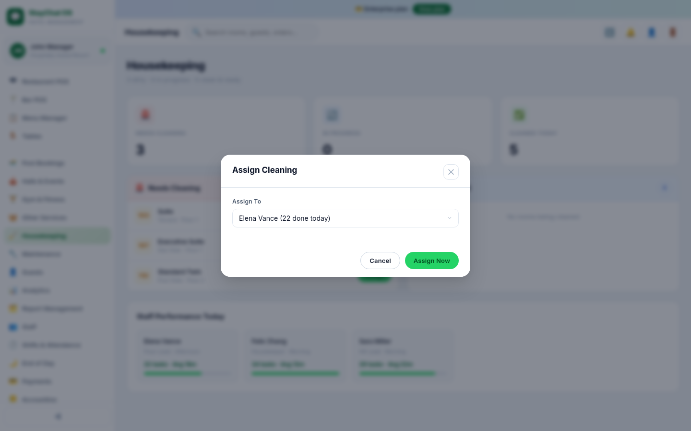
Assigning a room. Only active housekeeping staff are offered; the task count next to each name helps balance the load.
Worked example — the 13:20 arrival
Grace Okafor arrives at 13:20 for Room 108, but the previous guest left late and the room is still dirty. Reception opens Housekeeping, assigns 108 to Felix (the floor’s housekeeper) and tells the guest the room will be ready in 20 minutes. Felix cleans and marks it clean at 13:38; the room turns available; reception checks the guest in at 13:42 and issues Wi-Fi. The delay is visible in the record, which is exactly what the manager needs when reviewing the day.
Trainer tip. Make “clean” a physical check, not a button press at the door. The system trusts the person who presses it; the guest trusts the room.
Watch out. Marking a room clean while a maintenance issue is open puts a broken room back on sale. Fix or block first, then clean.
Key takeaway. Housekeeping’s output is availability. Every completed room is revenue that reception can sell.
Related: Rooms (03), Maintenance (19), Shifts (27) for who is on duty.
19
Maintenance
Report a fault, assign a technician, block the room if needed, and close the work order with a record.
Maintenance keeps broken things from becoming guest complaints. A request records the room, the fault and a priority; it can be assigned to a technician, started, and completed. A room with an open high-priority fault should be marked maintenance on the Rooms board so it cannot be sold until repaired.
Actions — Start Work (pending → in progress), Mark Complete, Assign Staff, Edit.
+ New Request — room number, priority, issue description. Also reachable from Dashboard → + New Incident.
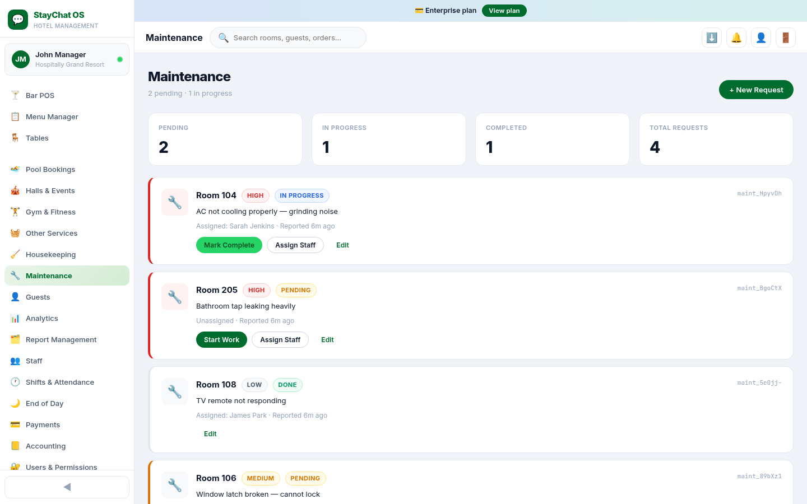
Four work orders, colour-coded by priority: a grinding AC unit, a leaking tap, a window latch and a completed TV remote. Unassigned high-priority items are the manager’s first call.
Step by step: report and resolve a fault
Click + New Request. Enter the room number, choose priority (high / medium / low) and describe the fault in the guest’s words plus the technical detail (“AC not cooling — grinding noise”).
Submit. The request is pending and unassigned.
Assign a technician. Assignment moves it to in progress.
If the room cannot be used, open Rooms → the room → Maintenance so it leaves the sellable pool. Tell affected guests before they discover it.
When fixed, Mark Complete. Then return the room to dirty (for cleaning) or available only after housekeeping has serviced it.
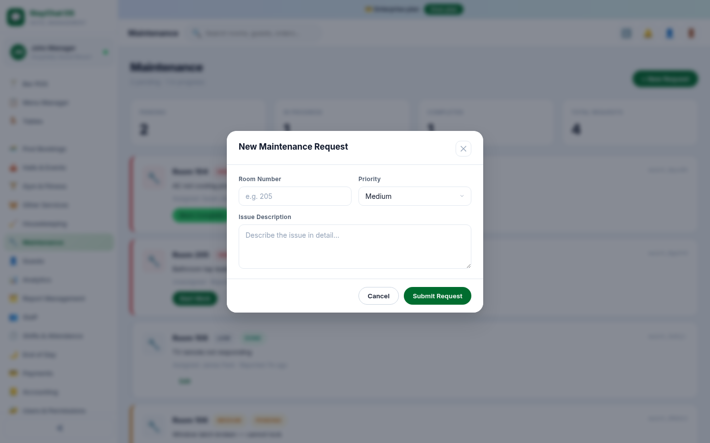
Raising an incident. The description should be specific enough for the technician to bring the right part on the first visit.
Worked example — the Friday AC failure
At 16:40 Room 104’s AC starts grinding. Reception raises a high priority request and marks the room maintenance, then moves the arriving guest to Room 105 before check-in. The technician is assigned and starts work at 17:05. Parts are needed, so the room stays blocked overnight. On Saturday at 10:00 the work is completed, housekeeping cleans, and the room returns to available for the evening. The guest never sees the fault; the block is visible in the occupancy report.
Trainer tip. Teach priority discipline: high = guest cannot sleep/wash/secure the room; medium = comfort or a future failure; low = cosmetic. If everything is high, nothing is.
Watch out. Completing a request does not automatically clean or release the room. Both steps are deliberate: fix → clean → available.
Key takeaway. A work order is only closed when the room is safe and clean. “Fixed” and “sellable” are two different states.
Guests is the hotel’s memory. A complete profile means the next reservation auto-fills, the WhatsApp thread has a name, the loyalty programme has a balance, and the manager can see who the best customers are. It is also the record that matters when a guest disputes a charge or asks for their usual room.
Screen tour
Guest table — name and phone, room, loyalty tier badge, points, stays, total spent, current check-in/check-out dates.
+ Add Guest — full name, phone, email, room, loyalty tier, points, check-in and check-out dates.
View — a profile card with contact, preferences, loyalty and spend; WhatsApp and Add 100 Points.
Edit — correct details without touching stay history.
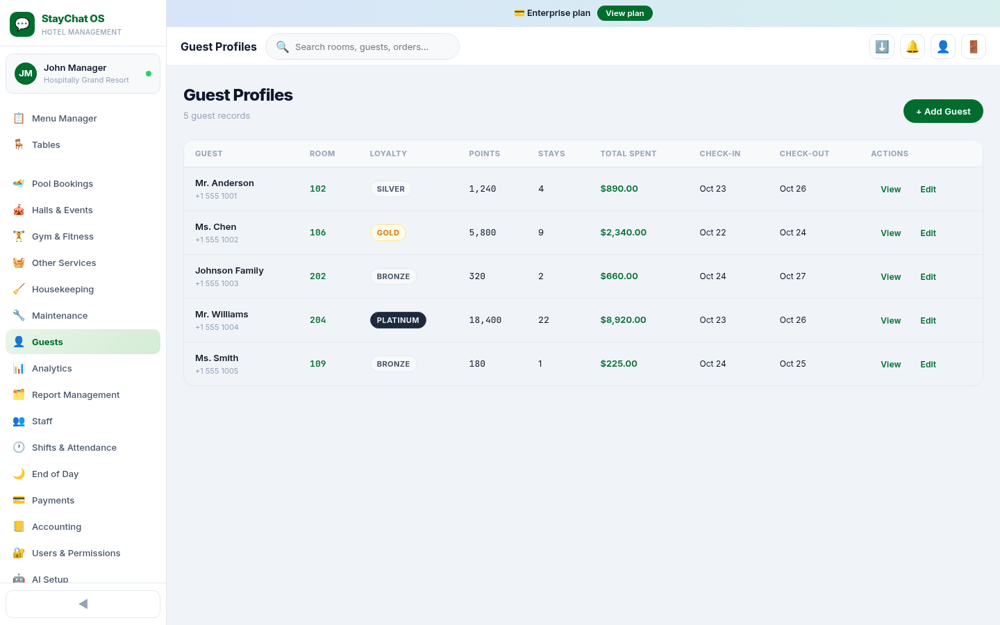
Guest profiles with loyalty tiers from Bronze to Platinum. Mr. Williams is Platinum with 22 stays — the kind of guest whose preferences should never be asked twice.
Step by step: create a complete guest profile
Click + Add Guest (or let the reservation form create it on first booking).
Enter the full name exactly as on the ID, plus phone and email.
Link the current room if they are in-house.
Set the loyalty tier (Bronze, Silver, Gold, Platinum) and points if migrating from another system.
Add the stay dates. Save.
Open View to confirm the profile reads correctly, then use Edit for corrections.
Preferences and history
Preferences are stored on the profile (sea view, extra pillows, late checkout, quiet room). They are visible at the desk and in the reservation’s returning-guest strip. Stay count and total spend build automatically from reservations and payments; do not type them by hand unless you are migrating history.
Worked example — recognising a repeat guest
A caller gives the number +1 555 1004. The reservation form auto-fills Mr. Williams: Platinum, 22 stays, $8,920 lifetime, preferences “Sea View, Suite, Extra Pillows, Daily Spa”. The desk assigns Room 204, the sea-view junior suite, without being asked. At check-in, reception adds 100 loyalty points for the direct booking and notes the spa preference for the concierge. The guest notices; the profile did the work.
Trainer tip. Search by phone, not name. Names are spelled differently on every channel; phone numbers are stable.
Watch out. Duplicate profiles split history and loyalty. Before adding a guest, search the phone number; if a record exists, edit it instead of creating a second one.
Key takeaway. A guest profile is an asset. Every complete profile is a future booking that starts with “the usual, please”.
Analytics answers “how are we doing?” rather than “what happened today?”. It is the screen for a weekly manager meeting or an owner’s call: occupancy now, revenue today, order volume, maintenance completion, the 12-day revenue and occupancy trend, staff distribution and how well the direct booking channel converts.
Revenue — Last 12 Days — a bar chart from the daily analytics table.
Occupancy — Last 12 Days (%) — the shape of demand, not just today.
Staff by Department — how the team is distributed.
Booking Engine — Direct Channel — submissions, confirmed, confirmation rate and confirmed revenue.
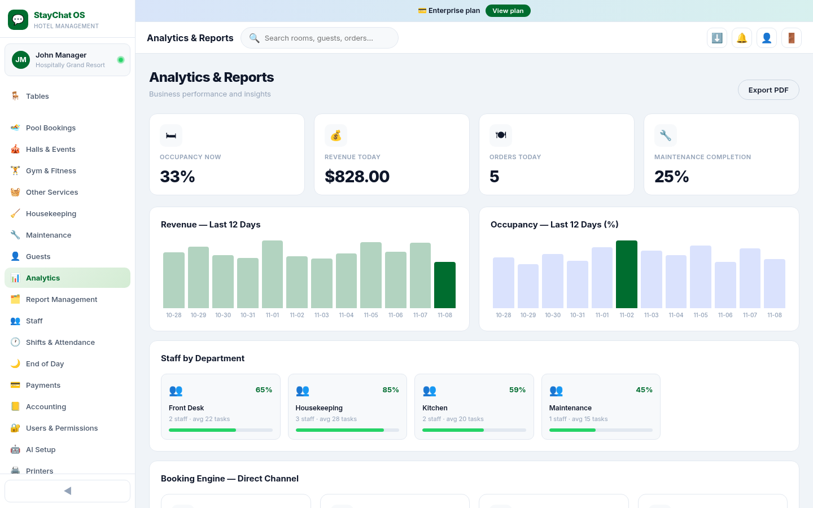
Analytics with the 12-day revenue and occupancy trends. The direct-channel panel is the honest measure of whether the QR posters and booking page are working.
Step by step: the Monday review
Read the four KPI cards. Compare Revenue Today with the same day last week (use Reports for the exact day).
Look at the occupancy bars. A mid-week dip is normal; a weekend dip is a pricing or channel problem.
Check the direct-channel panel. A low confirmation rate means the desk is slow to confirm Pending bookings.
Check Maintenance Completion. Below 70% means rooms are staying out of service too long.
Decide one action and note it for the team: a promo blast, a rate change, a housekeeping push, or a channel fix.
Worked example — the Tuesday slump
Analytics shows occupancy at 38% for Tuesday–Wednesday while weekends sit at 85%. Revenue is flat week on week. The manager checks the direct-channel panel: 9 submissions, 6 confirmed, 67% confirmation. Two things follow: reception gets a 30-minute confirmation SLA, and marketing sends a Tuesday–Wednesday promo to past guests using Dashboard → Promo Blast. Two weeks later the mid-week bars rise; the change is visible in the same chart.
Trainer tip. Teach managers to read the trend, not the single day. One bad night is noise; five bad Tuesdays is a pattern.
Watch out — Export PDF. The button on this screen is a placeholder in this build and only shows an informational message. To produce a PDF, use your browser’s Print → Save as PDF, or use Report Management for the formal report set.
Key takeaway. Analytics is for decisions, not decoration. End every review with one named action and an owner.
Report Management is the formal reporting desk. Pick a report, pick a period, read the summary cards and the detail table. It is the source for the daily revenue pack, the weekly outlet review, and the auditor’s sample testing.
Restaurant (POS) · Bar (POS) · Room Service · Pool · Halls & Events · Other Services
System
All Activity (Audit Log)
Screen tour
Report list (left) — grouped by category; click a report to run it.
Period pills — Daily, Weekly, Monthly, Quarterly, Yearly, Custom.
Date control — a single date for fixed periods, or From/To for Custom.
Summary cards — automatically built from the report’s own totals.
Detail table — the records behind the totals, with status badges and money formatted in the hotel’s currency.
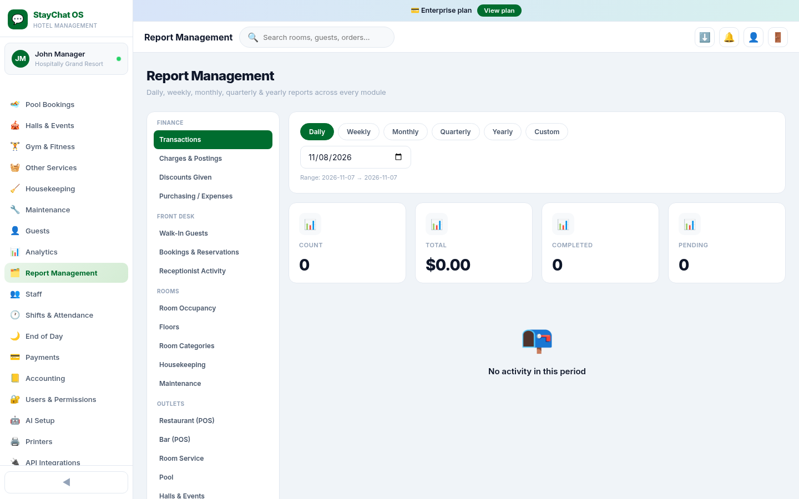
Report Management. The left rail is the catalogue; the right pane is the live report with its summary cards and detail rows. Use the browser’s Print to produce a paper or PDF copy.
Step by step: produce the daily finance pack
Open Report Management → Finance → Transactions.
Set the period to Daily and the date to the day you are closing.
Read the summary cards (count, total). They must match the Payments page for the same day.
Print the page (Ctrl/Cmd + P → Save as PDF) and file it with the day’s cash-up.
Repeat for Discounts Given and Purchasing / Expenses; attach them to the same pack.
Run All Activity (Audit Log) for the exact same date and scan for voids, refunds, overrides and permission changes.
Worked example — the auditor’s three questions
An auditor asks: (1) Did every closed POS ticket have a payment? Run Restaurant (POS) and Bar (POS) for the week — every row shows method and total. (2) Were discounts authorised? Run Discounts Given; the ticket, outlet, percentage and amount are listed. (3) Did anyone check a guest out with a balance? Run All Activity and filter the day for checkout overrides — the reason and the staff name are in the log. Three reports, ten minutes, no guesswork.
Trainer tip. Show staff the Receptionist Activity report once. Seeing their own name and actions listed changes behaviour faster than any policy memo.
Watch out. A report reflects the data at the moment you run it. If someone back-dates or voids a transaction after you printed the pack, the numbers will change. Print the audit log with the pack so the version is provable.
Key takeaway. Analytics shows direction; Report Management shows evidence. Use both, and keep the printed pack.
Related: Payments (23), Accounting (24), End of Day (25).
23
Payments
One place for every transaction, the balance gate at checkout, receipts and payment links.
Payments is the hotel’s money ledger at the counter: room payments, deposits, POS settlements, service charges, refunds and payment links. It is where the front desk answers “what does this guest still owe?” and where every receipt is reprinted from.
Screen tour
Four counters — Total Revenue, Pending (count + amount), Average Transaction, Accepted Methods.
All Transactions — guest/room, description, method, amount, status, time and actions.
💳 Settle a Balance — look up a room and settle its full outstanding balance.
+ New Payment Link — create a link for a guest to pay remotely, then send it.
Export CSV — downloads the same transaction table you see.
View / Settle / 🖨 Reprint — per-transaction actions. Reprint opens the receipt with the paper picker.
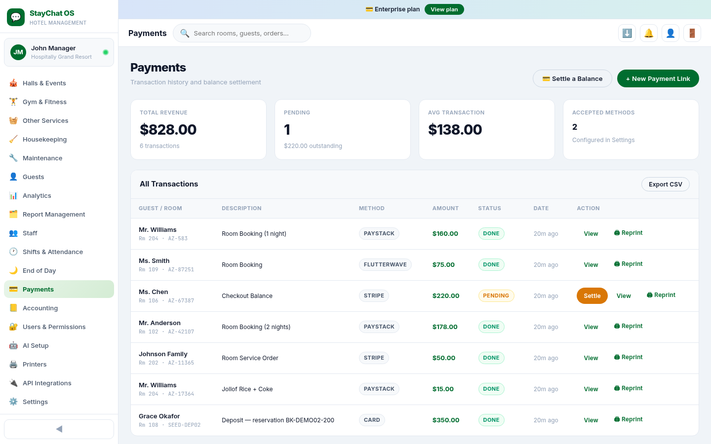
Payments: completed room and F&B transactions, one pending $220 checkout balance, and the actions that matter — Settle, View, Reprint. “Accepted methods” comes from Settings.
Step by step: settle a guest balance
Click 💳 Settle a Balance and enter the room number (or open the pending transaction’s Settle button).
The modal shows the room balance and the other unpaid charges (POS, pool, laundry, etc.) and the grand total.
Choose the method: Cash, Card, POS terminal, Bank Transfer, or another configured method.
For cash, enter the amount received; the system calculates change or warns of a shortfall.
Confirm. Every pending charge is settled in one action, the receipt opens on A4 and prints automatically.
If this settlement started from a room checkout, the checkout completes immediately afterwards — the guest leaves with a clean folio.
Settling a room: room balance plus incidentals, method selection and the grand total. One settlement clears every pending charge for that stay.
Payment links and reprints
Payment link — name, amount, room, method and description. The system generates a link and shows it; send it by WhatsApp or email. Use it for deposits and remote balances.
Reprint — choose 58 mm, 80 mm or A4. The copy is marked “Reprinted copy — original reference …” so it cannot be passed off as an original.
Export CSV — for the accountant or a gateway reconciliation; the file is built from the same table.
Worked example — the $220 departure
Ms. Chen’s folio is $178 room plus $42 of F&B and services. The desk opens Settle a Balance, sees $220, takes a card payment, and the A4 settlement receipt prints. The checkout completes; Room 106 turns dirty; housekeeping is notified. The transaction status changes from pending to completed, and the day’s revenue figures update — no separate “mark as paid” step exists, because the settlement is the payment.
Trainer tip. Always say the total out loud before taking the card. “That’s $220 including your bar tab” prevents the most common dispute.
Watch out — refunds. Refunds are manager-only, require a written reason, and post a reversing journal entry. They are not a way to “fix” a wrong payment method; void or adjust the original transaction instead, so the audit trail tells the truth.
Key takeaway. Settle the whole folio, not just the room. One action, one receipt, one clean checkout.
Related: Bookings (04), Rooms (03), Accounting (24), End of Day (25).
24
Accounting
Double-entry books behind the front desk: chart of accounts, journal, vouchers, ledger, trial balance and cash book.
Accounting is the formal record. Operational modules post money movements as they happen; Accounting lets the accountant verify, correct and report on them with double entry — every debit has a credit. The auditor sees the same tabs read-only, which is exactly what an audit needs.
The seven tabs
Tab
What it shows / does
Trial Balance
Every account with debit and credit totals. Debits must equal credits.
Ledger
Pick an account and see every line with a running balance.
Cash Book
Cash in and cash out with a running balance — the drawer’s formal history.
Journal
All journal entries with their lines; + Journal Entry posts a manual adjustment.
Vouchers
Payment/receipt vouchers for expenses and other non-POS movements; + Voucher.
Credit Sales
Amounts billed to accounts and not yet collected.
Chart of Accounts
The account list with codes, types and normal balances; + Add Account.
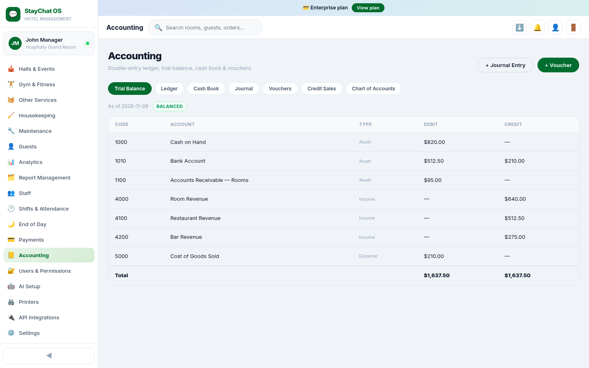
Accounting, opening on the Trial Balance. The tab row is the accountant’s whole workspace; the auditor sees the same data without the create buttons.
Step by step: post a manual journal entry
Open Journal → + Journal Entry.
Set the date and a reference (e.g. JE-1045) and a description a stranger could understand.
Add the debit line: choose the account and the amount.
Add the credit line. The form will not post an unbalanced entry.
Post. The entry appears in the Journal and in the Trial Balance immediately.
Check the Trial Balance still balances before you move on.
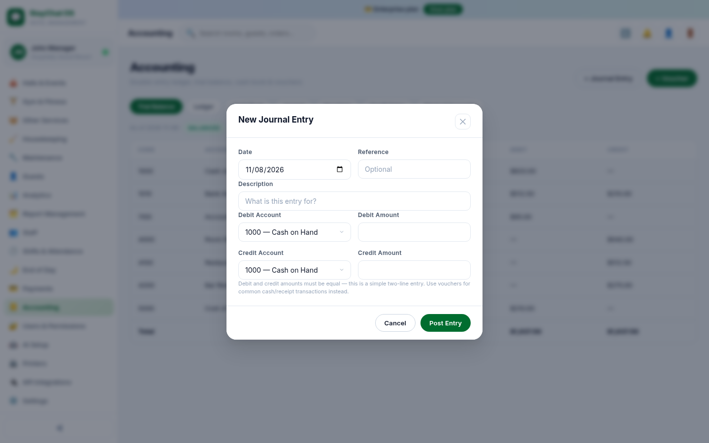
The journal entry form: date, reference, description, then balanced debit and credit lines. If it does not balance, it does not post.
Step by step: reconcile the cash book
Open Cash Book for the day.
Compare “In” with the physical cash counted at the front desk, restaurant and bar.
Compare “Out” with paid vouchers (supplier payments, petty cash).
If there is a difference, find the transaction — do not post a “miscellaneous” adjustment to hide it.
File the signed cash count with the printed cash book.
Worked example — the fruit supplier
The kitchen buys produce for $210 and pays by bank transfer. The accountant posts a Voucher: debit Cost of Goods Sold $210, credit Bank $210, reference “INV-2213 — produce”. The Cash Book is untouched (no cash moved); the Ledger shows the expense; the Trial Balance still balances. At month end the purchasing report and the ledger agree — because the voucher, not a handwritten note, was the record.
Trainer tip. Teach the phrase “debit what you receive, credit what you give”. It is enough for non-accountants to read a journal without fear.
Watch out. Never edit the chart of accounts to “make a report look right”. Account types and normal balances drive every report; a wrong type quietly corrupts the trial balance.
Key takeaway. Operational modules record what happened; Accounting proves it. If the trial balance does not balance, stop and find the entry.
Related: Payments (23), End of Day (25), Reports (22), Billing & Plan (02).
25
End of Day
Every department closes its own day against system totals; the manager sees all six accounts and the variances.
Who: all operational roles (eod.use); overview/reopen (eod.manage)Sidebar → End of Day
What this screen is for
End of Day is the daily handbrake. Each outlet — front desk, restaurant, bar, pool, halls, other services — closes against the money the system recorded, not a number typed from memory. Staff see only their own department; managers see every department, the per-staff breakdown and the reopen controls.
Screen tour (manager view)
Date picker and Today — close or review any date.
Closed Today (Recorded Revenue) — the sum of the day’s closings.
Department cards — front desk, restaurant, bar, pool, halls, other services. Open departments show a Close … button; closed ones show who closed, the amount, a Closed badge and Reopen.
By staff member — who closed which departments, how many closings, the recorded total and whether anything was reopened.
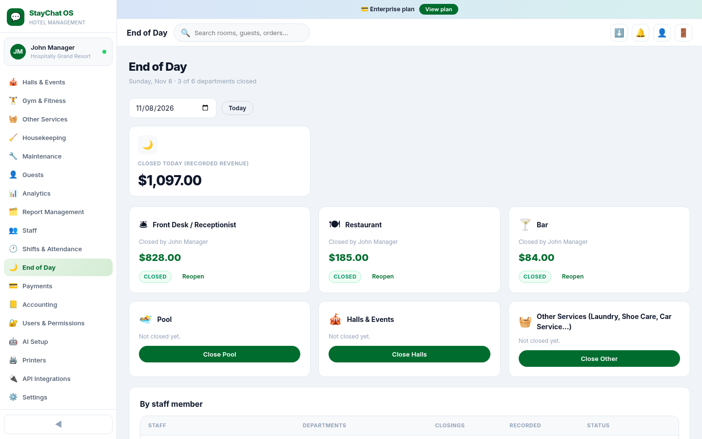
End of Day at 23:40: front desk $828, restaurant $185 and bar $84 closed; pool, halls and other services still open. The recorded total counts only closed departments.
Step by step: close your department
Count the cash and total the card slips for your outlet.
Open End of Day, check the date, and click your department’s Close … button.
The close modal shows the system totals by method (cash, card, room charge, customer bill, group account) and the number of tickets/transactions.
Compare with what you actually hold. If they match, add an optional note (“balanced”) and confirm.
If they do not match, do not “adjust” the figure. Note the variance, tell your supervisor, and find the ticket or payment that explains it.
Confirm. The card flips to Closed with your name on it.
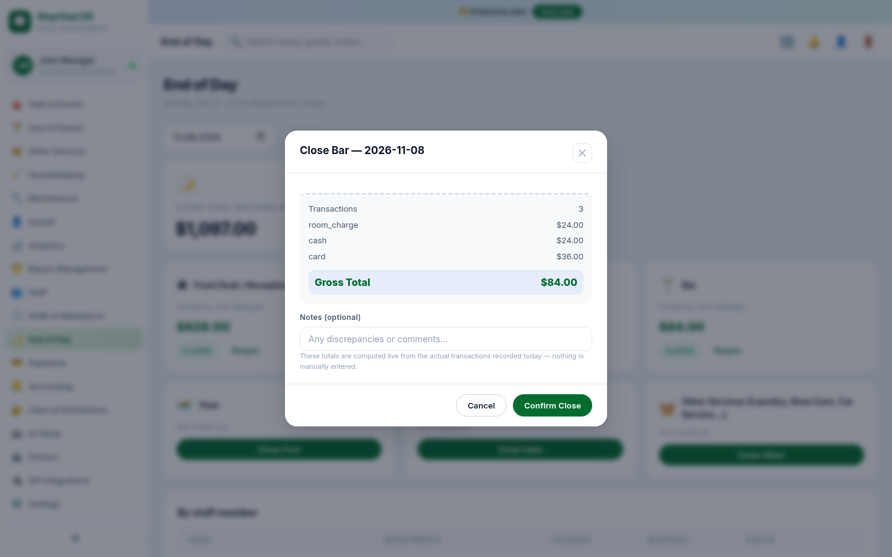
Closing the bar. The totals are calculated from the day’s actual tickets, so the close is a comparison, not a data-entry exercise.
Reopening
Only a manager can reopen a closed day. Reopening marks the closing Reopened and requires the department to close again. Use it for a genuine correction (a ticket discovered after close), never to “try again” for a better number — the history keeps both attempts.
Worked example — the missing $18
The bar closes at $84 but the barman holds $66. He does not change the figure. He notes “cash short $18”, tells the manager, and they check the board: a walk-in lager tab was voided after payment had been taken in cash. The manager reopens the bar, the barman re-closes with the correct treatment, and the incident is discussed at the morning meeting. The record shows both closes and the reason — which is what protects the barman as much as the hotel.
Trainer tip. Make the close a two-minute ritual at shift end, before staff leave the building. A close done the next morning is a guess.
Watch out. An open department keeps the day open for reporting. Before the manager goes home, every department should show Closed — or a named reason why not (e.g. the pool was closed all day).
Key takeaway. EOD is not data entry; it is reconciliation. The system already knows the total — your job is to prove the money agrees.
The people directory that housekeeping, maintenance and the dashboard assign work from.
Who: admin (staff.manage)Sidebar → Staff
What this screen is for
Staff is the operational roster: name, role/title, department, shift, phone, email and live status. It is not the same as a login (that is Users & Permissions). A housekeeper can exist in Staff without ever signing in — the supervisor assigns rooms to them and the performance counters accrue.
Screen tour
Directory cards/rows — name, role, department, shift, phone, status (active, break, busy, off-duty), tasks completed and average time.
Search and department filter — find a person quickly on a busy morning.
Message — opens WhatsApp to that staff member’s number.
Edit — correct the record; Delete removes it from assignment lists.
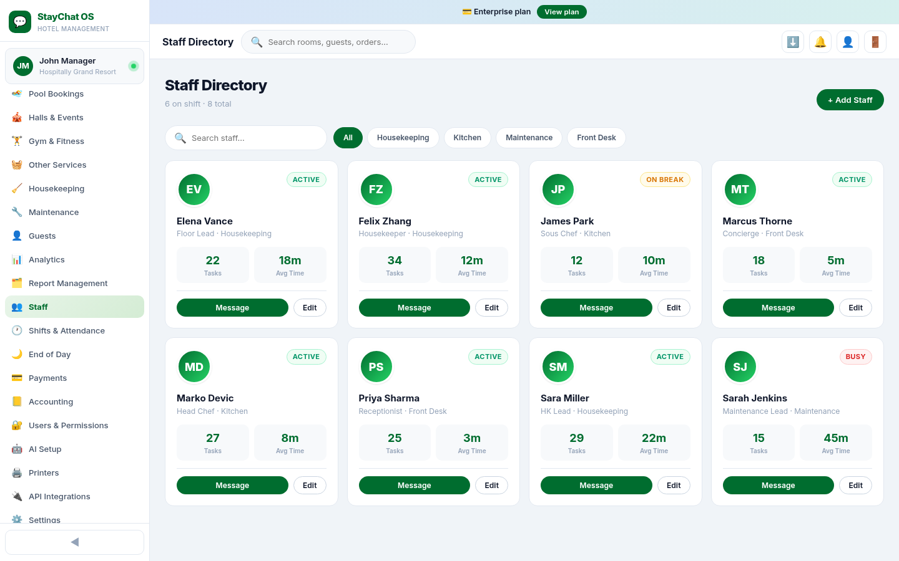
The staff directory with departments and current status. Housekeeping and maintenance assignment lists are built from this page, so a missing person is a missing service.
Step by step: add a new team member
Click + Add Staff.
Enter the full name as it should appear on assignments (“Felix Zhang”, not “Felix”).
Choose the role/title and the department. Department is what routes housekeeping, maintenance and EOD visibility.
Set the usual shift (Morning / Afternoon / Night) and the WhatsApp phone number.
Save. The person now appears in the assignment pickers for their department.
If they also need to sign in, create a separate user account in Users & Permissions and use the same name and email.
Worked example — the weekend housekeeper
The hotel hires a weekend housekeeper. The admin adds “Ada Nwosu”, role Housekeeper, department Housekeeping, shift Morning, phone number. No login is created. On Saturday the supervisor opens Housekeeping, sees Ada in the assignment list, and assigns four rooms. Her tasks-completed count rises during the day and appears in the Staff Performance panel. On Sunday evening the admin checks the performance panel before deciding whether to extend the contract.
Trainer tip. Keep role titles customer-facing and consistent (“Housekeeper”, not “HK2”). Reports and assignments read better, and new staff understand the hierarchy.
Watch out. Deleting a staff record removes them from future assignments but does not erase their history in tickets, work orders or attendance. If someone leaves, deactivate their login as well — Staff and Users are two different switches.
Key takeaway. Staff is the roster; Users is the security. Keep both current, or work gets assigned to ghosts.
Shifts & Attendance records who is on duty and when. Staff clock themselves in and out; the admin defines shift windows and the duty rotation (who covers which day). The records feed payroll preparation and explain “who was on the desk when this happened”.
Screen tour
Date and Today — attendance for a chosen day.
+ Clock In — staff member, optional shift; records the time and marks present or late.
Clock Out — closes the open attendance row.
Manage Shifts — name, department, start and end time; Delete.
Manage Rotation — a repeating duty cycle with an anchor date, rows per department/day and the ability to move or remove rows.
Shifts & Attendance: today’s clock-ins, the shift definitions and the duty rotation in one screen. A late clock-in is flagged automatically.
Step by step: clock in and out
At the start of your shift, open Shifts & Attendance and click + Clock In.
Select your name and your shift (optional). Confirm.
The system records the time and marks present or late against the shift start.
At the end, find your row and click Clock Out.
If you forgot, tell the admin the same day — the record is corrected, not invented later.
Step by step: define shifts (admin)
Manage Shifts → Add Shift.
Name it (Morning, Evening, Night), choose the department (or “All”), and set start and end times.
Save. Staff can now clock in against it.
Open Manage Rotation, set the cycle anchor date, then add rows for each department/day.
Save the rotation. The roster repeats from the anchor date.
Worked example — the late housekeeper
The morning shift starts at 07:00. Felix clocks in at 07:22; the row is marked late. The supervisor sees it on the attendance table and assigns his rooms second, after the on-time staff. At month end the admin exports the attendance history for payroll: lateness is a fact in the record, not an argument. When the hotel later changes the morning shift to 06:30, the admin edits the shift definition — the historical records keep their original times.
Trainer tip. Put the clock-in screen on a tablet at the staff entrance. The shorter the walk, the more honest the time.
Watch out. Clocking in for a colleague is collusion, not teamwork. Each person uses their own account; the audit trail matters if a payroll dispute arises.
Key takeaway. Attendance is a by-product of good shift definitions. Define the shifts once, then let staff clock themselves.
Related: Staff (26), End of Day (25), Users & Permissions (28).
28
Users & Permissions
Create logins, assign roles, customise capabilities, reset passwords, and define the hotel’s own roles and departments.
Users & Permissions controls who can sign in and what they can do. It has two layers: the user (a person with a login) and the role (a bundle of capabilities). Built-in roles cover the normal hotel jobs; custom roles and per-user overrides cover everything else.
Screen tour
User table — name/email, role badge, department, permission state (Role Default or Customized), status, last login, actions.
+ Invite User — full name, email, temporary password, phone, role, department.
Edit / Permissions — the full capability checklist; “Reset checklist to role defaults”; save.
Reset Password — issues a new temporary password; Deactivate / Reactivate controls access without deleting history.
User management: every login, its role, department, whether permissions are role-default or customised, and when it last signed in. The custom role created for the demo is visible on the right.
Step by step: invite a new user
Click + Invite User.
Enter the full name, a real email address and a temporary password (the user changes it at first login).
Choose the role. The checklist below pre-fills with that role’s defaults.
Choose the department — this drives End of Day visibility and housekeeping/maintenance routing.
Tick or untick individual capabilities if this person genuinely differs from the role. The badge changes to Customized.
Send the invite. Hand over the temporary password in person or by a channel the person controls — never in a group chat.
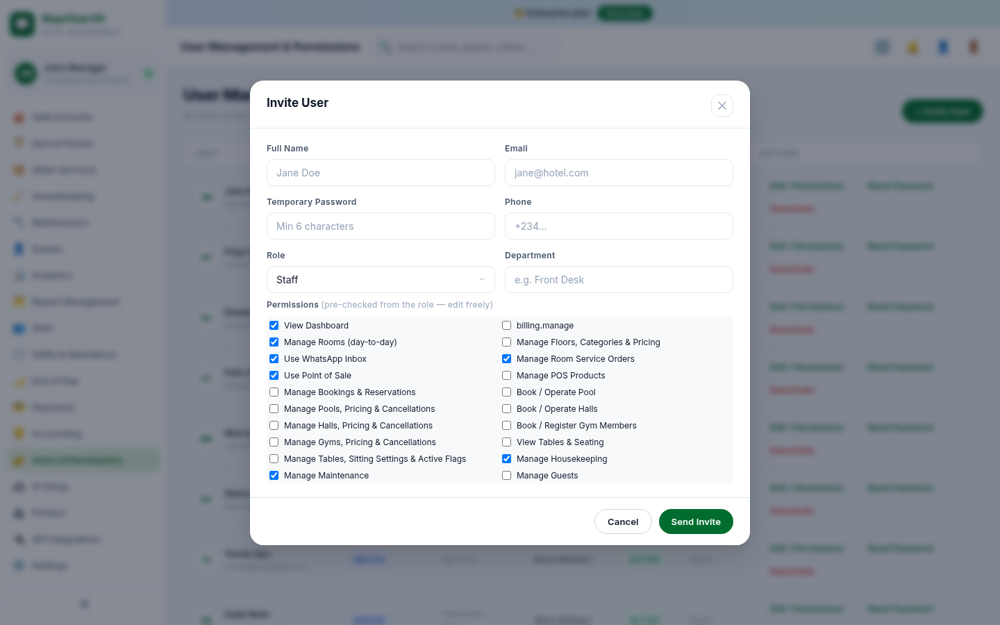
Inviting a user. Role sets the starting permissions; the checklist below is the truth about what they will actually be allowed to do.
Step by step: create a custom role
Open Roles & Departments → + Role.
Give it a human name (“Front Desk Supervisor”, “Restaurant Supervisor”).
Pick a template to start from — this is a convenience, not a lock.
Tick the capabilities the role needs. Be stingy: every .manage is a financial control.
Create. The role appears in the invite/edit dropdown for future users.
Edit or remove it later; existing users keep their resolved permission set until changed.
Password resets and leavers
Reset Password generates a new temporary password and revokes old sessions where applicable. Use it when a password is forgotten, not as a shared-access tool.
Deactivate blocks sign-in immediately but keeps the user’s history. This is the correct action for a leaver.
Delete is for accounts created in error. It can orphan audit context; prefer deactivation.
Worked example — a night auditor without accounting power
The hotel wants a night auditor to check the day’s numbers but never post entries. The admin creates a custom role “Night Auditor” from the Auditor template and leaves accounting.view, analytics.view, dashboard.view and eod.manage ticked; accounting.manage stays off. The night auditor can read the ledger, reopen a closing if a ticket is found, and produce reports — but cannot create a journal entry or alter the chart of accounts. If the hotel later needs them to post, the admin ticks one box; the badge changes to Customized, and the change is audited.
Trainer tip. Before creating a custom role, ask: “what is the one thing this person must never do?” Build the role around that answer, not around their convenience.
Watch out. A customised user is no longer following the role. If you later edit the role, that user will not change. Review the Customized badges quarterly.
Key takeaway. Roles for the job, overrides for the exception, deactivation for the leaver. Never share a login.
Related: Staff (26), Settings (32), Billing & Plan (02) for login limits.
29
AI Setup
Connect the model that powers the AI receptionist — provider, key, model and which agent it runs.
Who: admin (ai.manage)Sidebar → AI Setup
What this screen is for
AI Setup is where the hotel connects its own AI provider account. StayChat OS does not resell tokens: you bring the key, choose the model, and assign the agent role. The AI then answers guest WhatsApp messages according to the tone and escalation rules in Settings. If no agent is active, the Inbox still works — staff simply answer everything themselves.
Screen tour
Agent cards — label, provider, model, agent role, monthly surcharge and an active toggle.
+ Add AI Agent — label, agent role, provider, model, API key, monthly surcharge.
Active toggle — only one agent should normally be active; the Inbox labels its replies with the active agent.
Delete — removes the configuration (and its stored key).
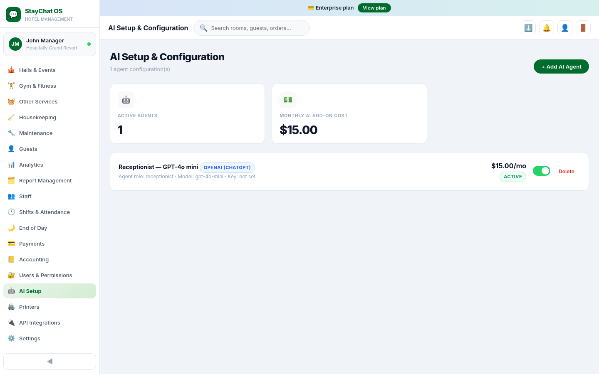
One active receptionist agent on OpenAI’s GPT-4o mini. The key is stored encrypted and never shown again in full after saving.
Step by step: connect an AI provider
Create an API key in your provider’s console (OpenAI, Qwen, DeepSeek, Hugging Face, OpenRouter, Kimi, Zai, or another compatible endpoint).
In AI Setup, click + Add AI Agent.
Give it a label staff will recognise (“Receptionist — GPT-4o mini”).
Choose the agent role: receptionist for guest enquiries, concierge for recommendations, support for complaints and follow-ups.
Pick the provider and type the exact model name (e.g. gpt-4o-mini).
Paste the API key. Set the monthly surcharge if your commercial agreement includes one.
Save, then switch the agent Active.
Go to Settings → AI Receptionist and enable the receptionist, choose the tone, and decide whether auto-booking is allowed.
Test in WhatsApp Inbox → Simulate Guest Message before letting it face a real guest.
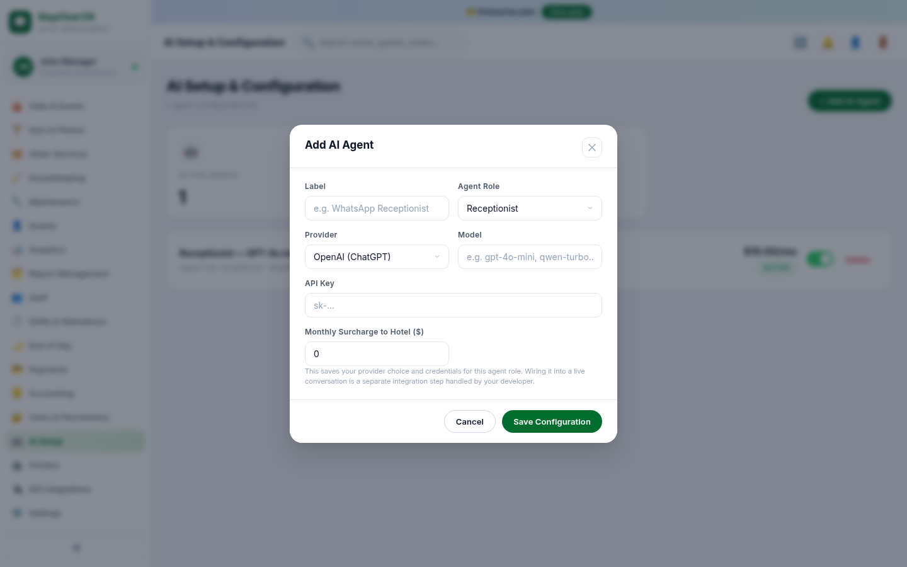
Adding an agent. The model field must match the provider’s exact identifier; a typo produces failed replies, not a helpful error at the guest’s end.
Worked example — a careful rollout
The owner wants AI to handle routine questions but not bookings. They add a receptionist agent, enable AI in Settings with the Professional tone, and leave Auto-Booking off. For one week the AI answers hours, Wi-Fi and breakfast questions, and flags anything involving money or a reservation. Staff review every thread at 17:00. After a week with no wrong answers, they turn on auto-booking — and keep the review habit.
Trainer tip. Role-play three tricky messages (a complaint, a refund request, a group quote) in the simulator. If the AI guesses, tighten the tone or escalate; do not hope.
Watch out. The AI is not a manager and must never approve refunds, discounts, late checkouts outside policy, or rate changes. If a conversation drifts there, a human must take over and the thread should be reviewed.
Key takeaway. AI is a receptionist on probation: connect it, constrain it, test it, then widen its remit slowly.
Receipt and report printers by department, with a test print before service starts.
Who: admin (printers.manage)Sidebar → Printers
What this screen is for
Printers defines the physical output devices so receipts and reports land in the right place: 58 mm for the bar, 80 mm for the restaurant, A4 for the front desk. Each printer belongs to a department and can be the default for that department.
Screen tour
Printers grouped by department — name, type, connection, address, default flag, active status.
+ Add Printer — name, type (Thermal 80 mm / Thermal 58 mm / A4), department (Restaurant, Bar, Front Desk, Back Office), connection (USB / Network / Bluetooth), address or device ID, “set as default”.
Test Print — prints a sample on that printer so you know the paper width and alignment are right.
Edit / Delete — change or remove a device.
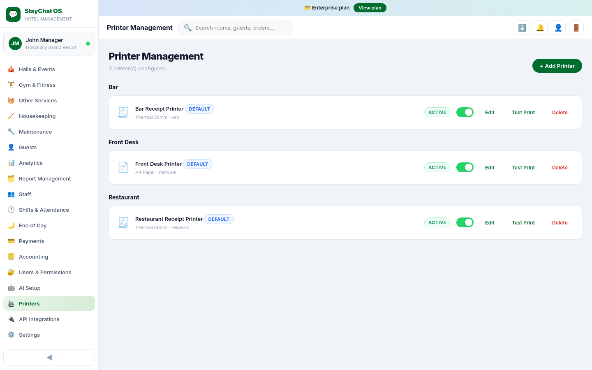
Three printers: 80 mm for the restaurant, 58 mm for the bar, A4 for the front desk. Each is the default for its department, which is why a bar receipt never prints on A4.
Step by step: add a printer
Click + Add Printer.
Name it physically (“Bar Receipt Printer — counter 2”).
Choose the paper type that matches the device, not the one you wish you had.
Choose the department and connection. For network printers, enter the IP address or device ID.
Tick Set as default for department if it should receive that department’s receipts by default.
Save, then click Test Print. Check alignment, width and that the hotel name is correct.
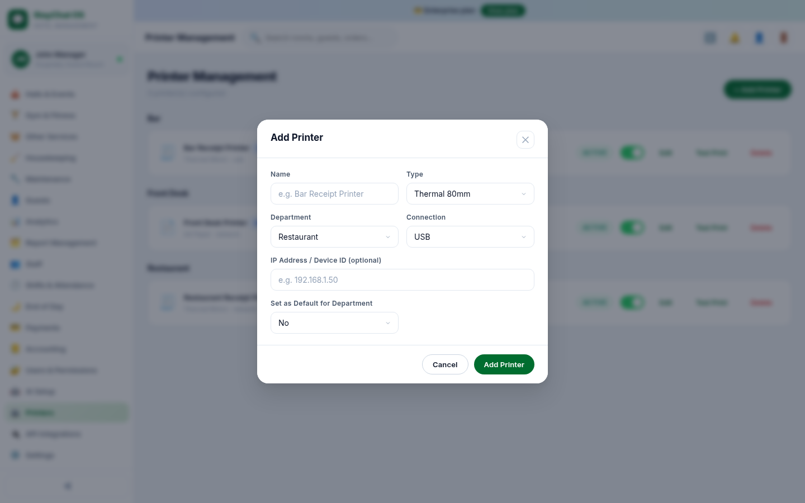
Adding a printer. Type, department and connection decide how receipts are routed and how wide the paper is.
Worked example — the new bar counter
A second bar counter opens. The manager adds “Bar Receipt Printer — counter 2”, type Thermal 58 mm, department Bar, connection Network with its IP, default off (the original stays default). During setup, the barman prints a test receipt from the new device. At service, tickets checked out at counter 2 use the printer chosen in the print dialog; the default remains the main counter. No receipt goes missing because two devices were confused.
Trainer tip. Test-print before every busy service, not during it. Paper, alignment and connectivity fail at the worst possible moment.
Watch out. A printer record does not install a driver. The device must be reachable from the computer or tablet that prints (USB paired, same network, or Bluetooth paired).
Key takeaway. Right paper, right department, right default. A receipt on the wrong printer is a guest waiting at the wrong counter.
Payment gateways, OTAs, SMS/email, door locks, Wi-Fi controllers, TVs, room automation and IoT — connected once, tested once.
Who: admin (settings.manage)Sidebar → API Integrations
What this screen is for
This is the hotel’s integration catalogue. Each service has its own credential form, a documentation link and a Test Connection button. Credentials are encrypted at rest and never shown in full after saving. Configure only what you actually use; an unused integration is a security surface, not a feature.
The integration catalogue. Configured services show a status badge instead of a Configure button; every card links to the provider’s docs.
Step by step: connect a payment gateway
Open the gateway card, e.g. Stripe, and click Configure.
Have the provider’s dashboard open: you will need the public and secret keys (and, for some providers, a webhook secret).
Paste the credentials. Use test keys first if the provider supports a sandbox.
Save and click Test Connection. A green result is the only proof worth trusting.
Repeat for each provider you will actually use, then set the accepted methods in Settings → Accepted Payment Methods.
Run one small real transaction end to end before a busy weekend.
Worked example — turning on UniFi guest Wi-Fi
The hotel runs a UniFi network. The admin opens Internet Management → Ubiquiti UniFi Controller, enters the controller URL and a dedicated API user’s credentials, and tests the connection. They then set the speed tiers and quota in the Wi-Fi flow. From the next check-in, credentials are pushed to the controller and the guest joins instantly. When the controller is down, the credential card still prints, with a warning that the network push failed — honest, not silent.
Trainer tip. Keep a sealed envelope or password-manager entry with the integration owner, the account email, the key rotation date and the test procedure. Integrations outlive staff.
Watch out. Never paste production secret keys into a test property or a shared demo. Use test keys, and rotate immediately if a key is exposed in a chat or screenshot.
Key takeaway. An integration is not “done” until Test Connection is green and one real transaction or device action has succeeded.
Settings holds the decisions that shape the whole system: the hotel’s name and currency, check-in/out times, WhatsApp credentials, AI behaviour, departmental SLAs, POS tax and service charge, pool capacity, accepted payment methods, gateway keys, booking-engine publication and the danger zone. Edit deliberately — these are not cosmetic fields.
The sections
Section
What it controls
Hotel Profile
Name, currency, phone, address, check-in/out times, timezone. The currency symbol appears on every screen and receipt.
Tenant Branding
Logo upload/remove. Appears in the sidebar and on guest-facing pages.
WhatsApp Business API
Phone number, phone number ID, access token, webhook verify token, app secret, connection test. The webhook URL is shown for Meta’s console.
AI Receptionist
Enable/disable AI replies, auto-booking, response tone (Professional, Friendly, Luxury Concierge, Formal).
Departmental Rules
Auto-assign housekeeping on checkout + HK SLA (minutes); auto-assign maintenance + maintenance SLA.
Point of Sale & Pool
Default tax %, service charge %, pool capacity for bookings.
Printers
Shortcut to the Printer module.
Accepted Payment Methods
Which methods the desk, POS and services may offer, plus account details for bank transfer etc.
Export partial data (JSON), partial reset, factory reset (type the hotel name to confirm).
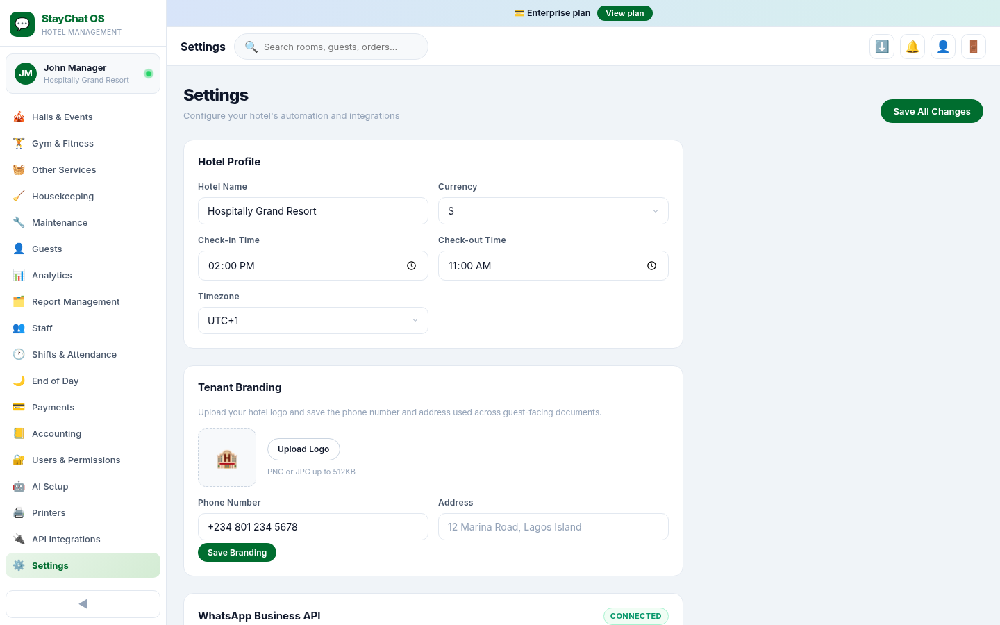
Settings. The WhatsApp tracker at the top shows which credential is still missing; the departmental SLAs below are what the housekeeping and maintenance boards measure against.
Step by step: a safe settings review
Correct the Hotel Profile first: legal trading name, currency, phone, address, check-in/out times, timezone. These affect receipts and guest promises.
Upload the logo. Check the sidebar and the booking page; a stretched or white-on-white logo is worse than none.
Work through the WhatsApp tracker: phone, phone ID, token, verify token, app secret. Click Test Connection only after all five are present.
Set the AI tone and decide on auto-booking. Keep auto-booking off until the team has reviewed a week of AI replies.
Set realistic SLAs: housekeeping 45 minutes, maintenance 60 minutes are sensible starting points.
Enter POS tax and service charge as percentages, and the pool’s concurrent capacity.
Tick only the payment methods you can actually reconcile, and fill the account details for each.
Click Save All Changes once, then test one receipt and one booking page.
Worked example — the 7.5% service charge
The owner introduces a 7.5% service charge on restaurant and bar tickets, and 7.5% VAT. The admin sets Tax Rate 7.5 and Service Charge 7.5 in Settings. From the next ticket, the POS shows Subtotal, Service (7.5%) and Tax (7.5%) separately, and the guest receipt explains each line. Existing tickets keep their original totals. At month end the accountant can see the service charge and tax collected without re-keying anything.
Trainer tip. Take a screenshot of Settings before and after any change on a live property. If something breaks, you can prove what changed and when.
Watch out — the danger zone. Partial reset erases transactions, users, products, rooms, guests, bookings, tickets and closings while keeping settings and configuration. Factory reset erases everything except your admin login and requires typing the hotel name. Both are irreversible; export first.
Key takeaway. Settings is the property’s rulebook. Change one thing at a time, save, then test the guest-visible result.
Related: Billing & Plan (02), Users & Permissions (28), API Integrations (31), Booking Engine (06).
A
Train-the-trainer programme
Five 90-minute sessions that take a new team from “what is this screen?” to “I can run my shift alone”.
This programme is designed for a hotel trainer (not a technical person) to deliver on-site, using the demo hotel. Each session has an objective, the chapters to read first, a live activity, and a pass criterion. Run one session per day in the first week; repeat monthly for new joiners.
Before session 1. Create one demo login per role (or use the seeded accounts), print the quick-reference card at the end of this manual, and make sure the demo hotel has at least: 5 rooms, 2 bookings, 2 open POS tickets, 3 dirty rooms and 2 maintenance requests. Ten minutes of setup saves an hour of improvisation.
Session 1 — The building blocks (90 min)
Part
Activity
Warm-up (10)
Ask each trainee to name one thing a guest asked them last week. Write them on a board; map each to a module.
Teach (25)
Foundations: the loop, tenant, roles, capability, folio, tender code. Use the one diagram and the permission matrix.
Demo (20)
Sign in as reception. Walk the sidebar. Show a module disappearing when a role lacks the capability (use a cashier account).
Practice (25)
Each trainee signs in as their own role, finds: today’s occupancy, one arrival, one dirty room, one pending message. They write the answers down.
Close (10)
Exit ticket: “Which module owns the money for food? Which owns room money?”
Pass criterion: can explain the loop and name the module that owns each of the four money sources.
Demonstrate a full arrival: new reservation → check-in → Wi-Fi credentials → room charge from the restaurant → settle → check-out → room dirty.
Trainees repeat in pairs on the demo hotel, one as guest, one as receptionist, then swap.
Inject two complications: the room is dirty at arrival; the guest has an outstanding balance at departure. Both must be handled without a manager override.
Debrief: what did you check before taking money? What would you say to the guest?
Pass criterion: completes arrival and departure unaided in under 8 minutes, with a correct folio and a printed receipt.
Session 3 — Selling food and drink (90 min)
Read first: Restaurant POS, Bar POS, Menu Manager, Tables.
Show the outlet lock: sign in as cashier, then as barman, and let trainees try to reach the other terminal.
Restaurant drill: seat Table 3, order 2 mains and 2 drinks, split the bill between card and room charge.
Bar drill: open a tab, add two rounds, transfer it to a room, print the 58 mm receipt.
Menu drill: add a new cocktail to the bar only, mark one dish unavailable, verify both tills.
Close the day for both outlets and compare the totals with the tickets.
Pass criterion: no ticket left open, correct outlet for every item, change calculated correctly, EOD closes with a named person.
Session 4 — Service recovery and the back office (90 min)
Read first: WhatsApp Inbox, Housekeeping, Maintenance, End of Day, Reports.
Role-play three WhatsApp messages: extra pillows, a broken AC, a complaint about a delayed order. Trainee must reply and create the records.
Assign a room to housekeeping, then mark it clean; raise a maintenance request and block the room.
Close the front desk day against a deliberately mismatched cash count. Trainee must note the variance, not hide it.
Run the Discounts Given and All Activity reports and find the void/discount from the role-play.
Pass criterion: every guest message produces the right record; the variance is documented with a name and a reason.
Create a custom role for a “weekend supervisor”; invite a test user with it.
Change the hotel notice on the booking page, publish it, and complete one real submission on a phone.
Add a printer, test print, and route a receipt to it.
Review the AI tone and the auto-booking switch; run the simulator once.
Walk the danger zone without pressing anything: explain what each reset erases and why export comes first.
Pass criterion: can create a safe custom role, publish a guest-visible change, and explain the two resets.
Role learning paths at a glance
Use this table to see who needs which chapters. The four biggest roles — receptionist, food & beverage, housekeeping and accounts — have detailed day-by-day paths in the next section.
Role
Must master
Should read
Assessment
Receptionist
03, 04, 05, 23, 18, 19
06, 07, 08, 09, 15, 16, 17, 20, 25
Full arrival + departure drill; settle a folio; handle a complaint thread.
Cashier / Server
10, 11, 13, 14, 25
12, 30
Restaurant service drill; cash change; EOD close; no void without reason.
Barman / Waiter
10, 12, 13, 14, 25
11, 30
Tab drill; room charge; 58 mm reprint; EOD close.
Housekeeping
18, 03
19, 27
Assign and complete 3 rooms; escalate a repair instead of marking clean.
Maintenance
19, 03
18, 26
Raise, assign, start and complete a work order; block and release a room.
Accountant
23, 24, 25, 22
21, 02, 32
Post a balanced journal; reconcile the cash book; run the daily pack.
Administrator
28, 32, 31, 30, 02
All chapters
Create a custom role, publish the engine, connect one integration, export before reset.
Trainer tip. Assess on the demo hotel, never on the live property. A trainee’s mistake should cost a demo record, not a guest’s reservation.
Next: the four core role paths, then twelve drills you can run in 15 minutes each.
Part 7 · Training & reference
Role-based training paths
Four paths, one per core role. Each path says what to learn, what to practise on the demo hotel, and what the person must do unaided before they touch a live shift.
How to run a path
One role, one path. Train the job the person was hired for; add chapters later as they grow.
Demo first, live second. Every practice run happens on the demo property. Mistakes there cost nothing.
Shift 1 watch, shift 2 do, shift 3 own. The trainer demonstrates, then shadows, then stays silent.
Sign off on evidence. Tick the competency sheet only after the task is done alone, at full speed.
What every path shares
Read ch 01 (Dashboard) and the shared interface page before anything else.
Know the offline rule: keep working, never duplicate the record on paper.
Know what is not yours to change — prices, refunds, roles, plan. Escalate instead.
Re-assess every six months, and after any role or module change.
Dashboard and the room strip (ch 01, 03); the booking list and its tabs (ch 04). Watch a check-in, a checkout and a Wi-Fi issue. Then do drill 2 (repeat guest by phone) with the trainer beside you.
2 — do
Settle a folio and close a stay (ch 23, ch 04); transfer a room and extend a stay. Answer two WhatsApp threads and turn one into a reservation (ch 07). Take a room-service order (ch 08). Run drills 1, 3, 4, 5, 6.
3 — own
Run a full arrival-to-departure cycle alone, including a group of three rooms and a guest with an outstanding balance. Handle a refund request by escalating it (ch 23).
Must pass unaided: reservation with complete ID · check-in + Wi-Fi card · checkout with $0 balance · room move · WhatsApp reply that creates the right record · cash and card settlement with correct change.
Not theirs: rate and category changes, refunds, reopening End of Day, creating users, editing the booking engine. These need a manager, even when the screen is visible.
Terminal access and switching (ch 10); tables and seats (ch 14); the restaurant till end to end (ch 11). Watch one ticket from opening to a printed 80 mm receipt, then repeat drill 7 with help.
2 — do
Bar tabs over several rounds (ch 12); settle to a room, a customer bill and a group account. Print on 58 mm and reprint a copy. Check the menu and stock (ch 13) without editing prices. Run drills 7, 8, 9.
3 — own
Serve a full dinner service alone: open, add, split by ticket, settle by card and room charge, close every ticket. Then close the department at End of Day (ch 25) and explain the variance in drill 11.
Must pass unaided: open and settle a restaurant ticket · bar tab across three rounds to a room charge · split payment as two tickets · 58 mm and 80 mm receipts · void vs comp decision · department close with variance note.
Not theirs: menu prices and categories, discount policy, printer configuration, reopening a closed day. A served item is never voided to fix a complaint — it is discounted or comped with approval.
Path continues on the next page: housekeeping and accounts.
Role-based training pathscontinued · housekeeping and accounts
Housekeeping
2 shifts + assessmentChapters 03, 18, 19, 20, 27
Shift
Focus and practice
1 — watch
Room statuses and why Dirty must never be marked Available early (ch 03, 18). Walk a checkout clean with the supervisor, including the linen and minibar check. Learn how to clock in (ch 27) and how the day’s room list is assigned.
2 — do
Clean and release five rooms, one of them a stay-over and one a departure. Raise a maintenance request from the room and attach the detail the engineer needs (ch 19). Report a lost-property item through the guest record (ch 20). Run drill 10 with the supervisor.
Assess
Complete a full floor alone: assign, clean, inspect, release, and escalate one fault instead of marking the room clean. A room with an open maintenance ticket is never released for sale.
Must pass unaided: assign and complete rooms · distinguish clean / dirty / inspected · raise and escalate a repair with a clear description · report lost property · clock in and out correctly · respect guest privacy (no guest details shared or photographed).
Not theirs: changing room rates or categories, deleting rooms, editing guest profiles, releasing a room under maintenance. Escalate to the supervisor or front desk.
Accounts
3 days · about 14 hoursChapters 21, 22, 23, 24, 25, 02 (read-only), 32 (read-only)
Day
Focus and practice
1 — watch
The money trail: a POS ticket, a room charge and a payment link all landing in Payments (ch 23). Run the daily reports and match them to the day’s takings (ch 22). Watch a department close and a cash count (ch 25).
2 — do
Reconcile one full day: Transactions, Discounts Given, Purchasing/Expenses and All Activity. Post a balanced journal and a cash-book entry (ch 24). Compare the dashboard trend with the report totals (ch 21). Run drill 11.
3 — own
Produce the day pack alone and explain every variance. Handle a refund correctly with a manager’s approval and a written reason (drill 12). Read — but do not change — the plan, gateway and API settings (ch 02, 32, 31).
Must pass unaided: daily pack in under 30 minutes · balanced journal · cash book reconciled · variance documented without editing totals · refund with reason and correct journal reversal · CSV export for the accountant.
Not theirs: deleting transactions, changing completed payments, reopening a closed day without a manager, editing the chart of accounts without approval. The audit trail is the defence — never tidy it by deletion.
Cross-training and promotion
A receptionist moving to accounts adds ch 21–25 and repeats drills 11 and 12. An F&B server moving to front desk adds ch 03–05 and drills 1–6. A housekeeping supervisor adds ch 19, 26, 27. Do not skip the drills because the person is experienced — the drills test this system’s rules, not the industry in general.
Trainer tip. Give each trainee the manual chapter list for their path, printed and folded into the sign-off sheet. “Read chapters 3–5 before Thursday” works far better than “familiarise yourself with the system”.
Next: twelve practical drills with pass conditions.
B
Twelve practical drills
Short, repeatable exercises with a clear pass condition. Use them for onboarding, refreshers and shift-huddle practice.
#
Scenario
What the trainee must do
Pass condition
1
Walk-in couple, one night
New reservation, one room, take card payment in full, print the booking receipt, check in, issue Wi-Fi.
Type the phone number first; let autofill complete the form; change only the dates.
Correct profile used, no duplicate guest created.
3
Group of 3 rooms
Group booking, 3 rooms, group name, one deposit; view the group folio.
One reservation with 3 rooms, deposit visible, group badge shown.
4
Room move
Transfer a checked-in guest to another free room for the whole stay.
Rate and folio follow; old room released; no double-booking.
5
Late checkout
Approve within policy, update the booking’s check-out date, note the approval.
Housekeeping sees the new departure; note exists.
6
Departure with balance
Settle the full folio from the checkout warning, then let checkout complete.
One receipt, balance $0, room dirty.
7
Restaurant split bill
Table ticket, 2 guests, half to Room 106, half by card.
Two closed tickets, correct amounts, room folio updated.
8
Bar tab over three rounds
Open a tab, add three rounds, settle to a room, print 58 mm.
One tab, correct total, single room-charge line.
9
Dish sold out
Mark the item unavailable in Menu Manager; confirm it disappears from the till but stays in yesterday’s report.
No sale possible; history intact.
10
Room 104 AC failure
Raise a high-priority request, block the room, move the arrival, complete and clean before release.
No guest in a broken room; room sellable only after cleaning.
11
Cash variance at close
Close the bar with $18 missing; document the variance and escalate.
Variance recorded, no figure edited, manager informed.
12
Refund request
Explain the policy; escalate to the manager; manager issues the refund with a reason.
Refund recorded, journal reverses, booking state correct.
How to run a drill in 15 minutes
Set up (3 min): make sure the demo hotel has the rooms, menu items and balances the drill needs.
Brief (2 min): read the scenario and the pass condition aloud. No hints beyond that.
Perform (7 min): trainee works; trainer observes silently and notes errors, not corrections.
Debrief (3 min): trainee explains each decision; trainer corrects only the errors that affect money or the guest.
Record: tick the sign-off sheet if the pass condition is met; repeat next week if not.
Trainer tip. Drill 11 (cash variance) is the one staff resist and need most. Run it with a manager present and praise the person who documents the shortfall honestly.
Next: the checklists staff can keep at the desk.
C
Daily, weekly and monthly checklists
Print these and keep them where the work happens — reception, the pass, the back office.
Integrations: keys rotated where due; test connections green.
Export partial data as a backup.
Plan usage vs limits checked in Billing & Plan.
The five-minute manager walk. Dashboard → Pending bookings → unpaid balances → dirty rooms vs arrivals → any department not closed. If all five are clean, the hotel is in control.
Next: what to do when something goes wrong.
D
Incident playbooks
Calm, correct responses to the situations that actually happen — written for the person at the counter, not for IT.
1. The internet drops
Keep working. The badge shows offline; reservations, check-ins, check-outs, guest registration and settlements queue on the device.
Tell the guest the truth: “I’ve recorded it; it will confirm when the connection returns.” Never promise an instant WhatsApp message.
Do not refresh or close the browser if you can avoid it — the queue survives, but staying put is safer.
When the connection returns, watch the badge clear. Check the queue for any item flagged needs review and resolve it with a manager.
Never write a paper receipt as well. Two records create a double charge.
2. Overbooking or a room conflict
Stop. Do not check anyone in until you know which reservation has the stronger claim.
Open Bookings and sort by arrival date. Check the confirmation times and whether a deposit was paid.
Use Transfer to move the later booking to a free room of equal or better standard.
If no room exists, walk the guest to a partner hotel at the hotel’s cost, with a manager’s approval. Record the reason in the booking notes.
Afterwards, find the cause: an unconfirmed online booking left in Pending, a room marked available while blocked, or an offline conflict. Fix the process, not just the night.
3. A guest disputes a charge
Open Payments and find the transaction; then the origin (POS ticket, room-service order, service order, pool/hall booking).
Read the items, the time and who posted it. Show the guest the detail, not just the total.
If the charge is wrong, correct it at the source if possible; otherwise a manager issues a refund with a written reason.
Never delete a transaction to “make it go away”. The audit trail is the hotel’s defence.
4. WhatsApp stops receiving
Check Settings → WhatsApp Business API: all five credentials present and Connected.
Click Test Connection. A failure is usually an expired token or a wrong phone number ID.
Confirm Meta’s webhook URL still matches the one shown and that the “messages” field is subscribed.
While it is down, use the + New Conversation flow to log enquiries manually, and tell guests to call.
5. The card terminal or gateway fails
Do not record a card payment you did not receive. Use cash or a payment link only if the guest agrees.
If the gateway charged but StayChat shows pending, do not charge again. Record the gateway reference and have a manager reconcile in Payments.
Keep the printed slip and attach the reference to the transaction note.
6. A receipt prints on the wrong paper
Check Printers: the printer’s type and its department default.
In the print dialog, choose the right device and paper width (58 mm bar, 80 mm restaurant, A4 desk).
Test print before the next service. If the device is offline, fix the connection rather than printing on the wrong machine.
7. Suspected staff misuse
Do not confront on the floor. Preserve the record.
Run Report Management → All Activity and Discounts Given; look for patterns: same account, same time, repeated voids.
Check Receptionist Activity and the POS ticket history. The audit log names the signed-in account for every action.
Deactivate the account if immediate risk exists; investigate with the owner and, if needed, HR/legal.
Trainer tip. Rehearse playbooks 1, 2 and 3 quarterly — they are where improvisation costs the most money.
E
Status & KPI glossary
One vocabulary for the whole team, so “confirmed”, “dirty” and “pending” mean the same thing at every counter.
Statuses
Status
Applies to
Means
available
Room
Clean, empty, sellable.
occupied
Room
A guest is in-house; a folio is open.
dirty
Room
Guest departed; needs servicing before sale.
cleaning
Room
Housekeeping is working on it.
maintenance
Room
Out of order; must not be sold.
pending_payment
Booking
Online submission awaiting desk confirmation.
confirmed
Booking
Room held; guest expected.
checked_in
Booking
Guest arrived; rooms occupied.
checked_out
Booking
Stay finished; rooms dirty.
cancelled
Booking/facility
Withdrawn; capacity released.
tentative
Hall booking
Enquiry accepted, not yet contracted/deposited.
in-progress
Maintenance
Technician assigned and working.
pending / preparing / delivered
Room service
Received / kitchen working / at the door.
closed / reopened
End of Day
Reconciled and signed / reopened for correction.
pending / completed / refunded
Payment
Owed / money received / reversed.
Metrics the system shows
Metric
Definition and why it matters
Occupancy Rate
Occupied rooms ÷ total rooms. The demand signal on the Dashboard and Analytics.
Revenue Today
Sum of completed transactions today. Pending charges are not included.
Pending balance
Money owed but not yet collected (room balances plus unpaid incidentals). The most important number for cash flow.
Open tickets
POS tickets not yet checked out or voided. An open ticket is uncollected revenue.
Confirmation rate
Confirmed direct bookings ÷ submissions. Measures how fast the desk converts the booking engine.
Maintenance completion
Completed requests ÷ all requests. Low values mean rooms stay out of service.
Average transaction
Revenue ÷ number of transactions. Useful for spotting a sudden drop in spend per guest.
ADR (manual)
Room revenue ÷ rooms sold. Not a dedicated card in this build — calculate from the Room Occupancy and Transactions reports when needed.
RevPAR (manual)
Room revenue ÷ total rooms available. Same source as ADR; calculate for owner reporting.
Watch out. “Revenue” on the Dashboard is cash-basis (completed only). An owner asking about “sales” may mean booked revenue including pending balances. State which number you are quoting.
Next: troubleshooting and the sign-off sheet.
F
Troubleshooting
The twenty questions the front desk actually asks — with the answer that fixes them.
Symptom
Likely cause and fix
A module is missing from my sidebar
Your role does not grant its capability. Ask the admin to check Users & Permissions → Edit / Permissions. Hiding is convenience; the server would refuse anyway.
“You don’t have permission to access that module”
The same cause, reached by a link. Do not retry; request the capability or ask a colleague with it.
I cannot check a room in
The room is not available (dirty/occupied/maintenance), or no guest was selected and the new-guest name is blank.
Checkout is blocked by a balance
Use Go to Pay to settle room + incidentals. Only a manager may override, with a written reason.
A room does not appear in the reservation room grid
It is not available, or it is already on another booking for those dates. Check Housekeeping and Maintenance first.
Booking dates won’t save
Check-out must be after check-in, and the room must be free for the whole new range. The conflict message names the problem.
I cannot find an online booking
Open Bookings → Pending; submissions are not confirmed automatically. Search by the guest’s phone or the tender code.
The booking page shows no rooms
The engine may be Off, the dates may have no availability, or rooms are dirty/blocked. Check Booking Engine status and Rooms.
Wi-Fi password shows “—”
The session was created without a controller password (controller not configured or push failed). Re-provision from the booking or check API Integrations → Internet Management.
WhatsApp reply does not send
Settings → WhatsApp shows Not Connected, the token expired, or the guest’s 24-hour window closed. Use a template or ask them to message again.
The AI is not replying
No agent active in AI Setup, AI disabled in Settings, or the provider key is invalid (test with the simulator).
POS shows the wrong menu
The product’s Outlet is wrong, the item is unavailable, or you are on the other terminal. Fix in Menu Manager.
A table is locked in the POS
An open ticket already sits on it. Find and close/settle that ticket, or void it if it was opened in error.
Cash change is wrong
The tendered amount was typed into the wrong field, or the total includes a service charge/tax you forgot. Read the totals block before confirming.
Room charge is not offered at POS
The room is not occupied (guest checked out or never checked in). Verify the guest, then use card/cash or Customer Bill.
A receipt printed on the wrong paper
Choose the correct printer/paper in the print dialog; set the department default in Printers. 58 mm bar, 80 mm restaurant, A4 desk.
The offline badge will not clear
The connection is still down or the session expired. Do not clear browser data — the queue lives in IndexedDB. Reconnect and sign in again if prompted.
An offline item says “needs review”
A conflict (e.g. the room was sold meanwhile). Open the item with a manager and resolve it manually; never force it.
End of Day says a department is already closed
Someone closed it. A manager can Reopen; staff cannot close twice.
The trial balance does not balance
A manual journal is unbalanced or an account type is wrong. Do not post another entry to hide it; find the line.
I was logged out unexpectedly
Session expiry or a password reset by the admin. Sign in again; the offline queue is preserved per account.
When to escalate. Escalate immediately for: money missing, a guest in a room that should be blocked, a suspected data leak, a gateway double charge, or any message that says the database is unavailable. Everything else can usually wait for the supervisor’s round.
Next: the competency sign-off sheet.
G
Competency sign-off sheet
Print one per person. A signature means the person can do the task alone, on the live system, without a manager standing behind them.
Signs in, finds the right module, reads the Dashboard
☐
☐
☐
Creates a reservation with complete guest and ID details
☐
☐
☐
Handles a group booking and reads the group folio
☐
☐
☐
Checks a guest in and issues Wi-Fi credentials
☐
☐
☐
Settles a folio (room + incidentals) and checks out
☐
☐
☐
Handles an outstanding balance correctly (no silent override)
☐
☐
☐
Answers a WhatsApp message and creates the right record
☐
☐
☐
Opens, adds to and settles a restaurant ticket correctly
☐
☐
☐
Opens, adds to and settles a bar tab; prints 58 mm
☐
☐
☐
Assigns and completes a housekeeping room
☐
☐
☐
Raises, assigns and completes a maintenance request
☐
☐
☐
Takes a pool, hall or gym booking without double-selling
☐
☐
☐
Closes their department at End of Day and explains a variance
☐
☐
☐
Finds a transaction, reprints a receipt, exports the CSV
☐
☐
☐
Follows the offline playbook without creating a second record
☐
☐
☐
Protects their login and understands why sharing is forbidden
☐
☐
☐
Trainee declaration: I have been trained on the items above. I understand that my account is personal, that every action is recorded against it, and that I must escalate rather than improvise when money or guest safety is involved.
Review cadence. Re-assess every six months and after any role change. A person who has not settled a folio in six months should be re-drilled before a busy weekend — skills fade faster than permissions.
StayChat OS — Complete User Manual · 2026 edition. Written for hotel owners, administrators and trainers. Screens and flows reflect the product at the time of writing; modules visible to a given user depend on their role and the hotel’s plan. For support: support@staychatos.com · staychatos.com.